NIST IR 7046 日本語訳
英語タイトル : A Framework for Multi-mode Authentication: Overview and Implementation Guide日本語タイトル : マルチモード認証のフレームワーク：概要と実装ガイド
公開日 : 2003-08-01
原文URL : https://csrc.nist.gov/pubs/ir/7046/final
原本 PDF : https://doi.org/10.6028/NIST.IR.7046
訳文 : 有志による非公式の日本語訳（AI による翻訳とレビュー）。全 320 段落のうち 298 段落を翻訳済み（原文取得日 : 2026-10-31）
[要約] NIST IR 7046 は、携帯端末向けのマルチモード認証フレームワーク（MAF）の設計の概要を示し、実装のガイドとなる報告書です。MAF は、組織のセキュリティポリシーを適用するための一般的なフレームワークであり、ポリシーはエシュロンと呼ばれる個別のポリシーコンテキストに整理され、利用者はその間を遷移できます。設計では、さまざまな種類の認証技術を容易に組み込めるようにし、異なる種類のポリシー強制メカニズムに対応するための簡素なインターフェースを提供しています。実装は iPAQ 携帯情報端末（PDA）上で行われ、カーネルモジュール、ユーザーインターフェースコンポーネント、認証ハンドラ、エシュロンレベルセレクタを取り上げ、ポーリング型と非ポーリング型の 2 つの認証メカニズムの例を示しています。
［NIST のロゴ。公的な標章のため、この非公式サイトには掲載していません。原本 PDF を参照してください。］
NISTIR 7046
NISTIR 7046
A Framework for Multi-mode Authentication: Overview and Implementation Guide
マルチモード認証のフレームワーク: 概要と実装ガイド
Wayne Jansen
Vlad Korolev
Serban Gavrila
Thomas Heute
Clément Séveillac
Wayne Jansen
Vlad Korolev
Serban Gavrila
Thomas Heute
Clément Séveillac
NISTIR 7046
NISTIR 7046
A Framework for Multi-mode Authentication:
Overview and Implementation Guide
Wayne Jansen
Vlad Korolev
Serban Gavrila
Thomas Heute
Clément Séveillac
マルチモード認証のフレームワーク:
概要と実装ガイド
Wayne Jansen
Vlad Korolev
Serban Gavrila
Thomas Heute
Clément Séveillac

COMPUTER SECURITY
Computer Security Division
Information Technology Laboratory
National Institute of Standards and Technology
Gaithersburg, MD 20988-8930
コンピューターセキュリティ部門
情報技術研究所
米国国立標準技術研究所
Gaithersburg, MD 20988-8930
August 2003
2003 年 8 月
U.S. Department of Commerce
Donald L. Evans, Secretary
米国商務省
Donald L. Evans 長官
Technology Administration
Phillip J. Bond, Under Secretary of Commerce for Technology
技術管理局
Phillip J. Bond、商務次官（技術担当）
National Institute of Standards and Technology
Arden L. Bement, Jr., Director
米国国立標準技術研究所
Arden L. Bement, Jr.、所長
Reports on Computer Systems Technology
コンピューターシステム技術に関する報告書
The Information Technology Laboratory (ITL) at the National Institute of Standards and Technology (NIST) promotes the U.S. economy and public welfare by providing technical leadership for the Nation’s measurement and standards infrastructure. ITL develops tests, test methods, reference data, proof of concept implementations, and technical analysis to advance the development and productive use of information technology. ITL’s responsibilities include the development of technical, physical, administrative, and management standards and guidelines for the cost-effective security and privacy of sensitive unclassified information in Federal computer systems. This Interagency Report discusses ITL’s research, guidance, and outreach efforts in computer security, and its collaborative activities with industry, government, and academic organizations.
米国国立標準技術研究所（NIST）の情報技術研究所（ITL）は、国の計測・標準インフラに技術面でのリーダーシップを発揮することで、米国の経済と公共の福祉を促進しています。ITL は、情報技術の発展と生産的な利用を進めるため、試験、試験方法、参照データ、概念実証の実装、技術分析を開発しています。ITL の責務には、連邦コンピューターシステムにおける機密扱いではない機微な情報のセキュリティとプライバシーを費用対効果よく確保するための、技術的、物理的、管理的、運用管理上の標準およびガイドラインの策定が含まれます。この省庁間報告書は、コンピューターセキュリティに関する ITL の研究、ガイダンス、アウトリーチの取り組みと、産業界、政府、学術機関との共同活動について論じています。
National Institute of Standards and Technology Interagency Report
30 pages (2003)
米国国立標準技術研究所 省庁間報告書
30 ページ（2003 年）
Certain commercial entities, equipment, or materials may be identified in this document in order to describe an experimental procedure or concept adequately. Such identification is not intended to imply recommendation or endorsement by the National Institute of Standards and Technology, nor is it intended to imply that the entities, materials, or equipment are necessarily the best available for the purpose.
原本PDFの抜粋画像

本文書では、実験の手順や概念を適切に説明するために、特定の商業的な事業体、装置、材料に言及する場合があります。こうした言及は、米国国立標準技術研究所による推奨や支持を意味するものではなく、それらの事業体、材料、装置が目的に照らして必ずしも最良であることを意味するものでもありません。
Abstract
要旨
The use of mobile handheld devices within the workplace is expanding rapidly. These devices are no longer viewed as coveted gadgets for early technology adopters, but have instead become indispensable tools that offer competitive business advantages for the mobile workforce. While these devices provide productivity benefits, they also pose new risks to an organization’s security. Enabling adequate user authentication is the first line of defense against unauthorized use of a lost or stolen handheld device. Multiple modes of authentication increase the work factor needed to attack a device, however, few devices support more than one mode, usually password-based authentication.
職場でのモバイル携帯端末の利用が急速に広がっています。これらの端末はもはや、新しい技術にいち早く飛びつく人たちが欲しがる目新しい道具とは見られておらず、モバイルで働く従業員に競争上の事業的な優位をもたらす、不可欠な道具になっています。これらの端末は生産性の向上をもたらす一方で、組織のセキュリティに新たなリスクももたらします。紛失または盗難にあった携帯端末が不正に使用されることに対する第一の防御線は、適切な利用者認証を可能にすることです。複数の認証モードを用いることで、端末への攻撃に必要な作業量を増やせますが、複数のモードに対応する端末はほとんどなく、通常はパスワードベースの認証だけです。
This report describes a general Multi-mode Authentication Framework (MAF) for applying organizational security policies, organized into distinct policy contexts known as echelons, among which a user may transition. The approach is aimed at helping users easily comply with their organization’s security policy, yet be able to exercise a significant amount of flexibility and discretion. The design of the framework allows various types of authentication technologies to be incorporated readily and provides a simple interface for supporting different types of policy enforcement mechanisms. Details of the implementation of the framework are provided, as well as two example authentication mechanisms.
本報告書は、組織のセキュリティポリシーを適用するための一般的なマルチモード認証フレームワーク（MAF）を説明します。ポリシーは、エシュロンと呼ばれる個別のポリシーコンテキストに整理され、利用者はその間を遷移できます。この方法は、利用者が組織のセキュリティポリシーに容易に従えるようにしつつ、相当な柔軟性と裁量を発揮できるようにすることを目指しています。このフレームワークの設計では、さまざまな種類の認証技術を容易に組み込むことができ、異なる種類のポリシー強制メカニズムに対応するための簡素なインターフェースを提供します。フレームワークの実装の詳細に加え、2 つの認証メカニズムの例を示します。
Table of Contents
目次
A Framework for Multi-mode Authentication: Overview and Implementation Guide
マルチモード認証のフレームワーク: 概要と実装ガイド
Introduction
はじめに
The purpose of this guide is to provide an overview of the design of a Multi-mode Authentication Framework (MAF) intended for handheld devices. It provides sufficient details for a developer to maintain the implementation, add new authentication mechanisms, and implement any needed extensions. The solution was implemented in C and C++ on an iPAQ Personal Digital Assistant (PDA), for a Linux operating system distribution from handhelds.org and the Open Palmtop Integrated Environment (OPIE), an open-source implementation of the Qtopia graphical environment of TrollTech. OPIE and Qtopia are both built with Qt/Embedded, a C++ toolkit for graphical user interface (GUI) and application development for embedded devices, which includes its own windowing system.
本ガイドの目的は、携帯端末向けのマルチモード認証フレームワーク（MAF）の設計の概要を示すことです。開発者が実装を保守し、新しい認証メカニズムを追加し、必要な拡張を実装するために十分な詳細を提供します。このソリューションは、handhelds.org の Linux オペレーティングシステムディストリビューションと、TrollTech の Qtopia グラフィカル環境のオープンソース実装である Open Palmtop Integrated Environment（OPIE）を搭載した iPAQ 携帯情報端末（PDA）上で、C および C++ により実装されました。OPIE と Qtopia はいずれも、組み込み機器向けのグラフィカルユーザーインターフェース（GUI）およびアプリケーション開発用の C++ ツールキットで、独自のウィンドウシステムを備える Qt/Embedded を用いて構築されています。
Overview
概要
From an operational view, MAF is not only a facility for multi-mode authentication, but also a general framework for applying PDA security policies that involve multiple sets of rules organized into distinct policy contexts, known as echelons, among which a user may transition. For this discussion, we consider only single-user systems. That is, the user is the sole operator of the device, once it is issued.
運用の観点では、MAF はマルチモード認証の機能であるだけでなく、PDA のセキュリティポリシーを適用するための一般的なフレームワークでもあります。このポリシーは、複数の規則の集合を、エシュロンと呼ばれる個別のポリシーコンテキストに整理したもので、利用者はその間を遷移できます。この議論では、単一利用者のシステムだけを考えます。つまり、端末がいったん支給されると、その唯一の操作者は利用者になります。
Conceptually, echelons are graded into sensitivity levels, level 1 being the least sensitive and level 3 being the most sensitive. Level 0 represents the most restrictive policy for device lockdown. While the framework allows the user discretion in selecting among echelon levels at which to operate, it also can be used to impose one or more authentication steps, where needed, before permitting transition to higher sensitivity levels. Thus, authentication steps are cumulative and hierarchical – all lower level authentication steps plus those required at some desired level must be successfully completed to reach the desired level. While the implementation uses our own policy enforcement engine, its design allows it to interface with other policy enforcement engines that may be available, such as LIDS or SE Linux.
概念上、エシュロンは機微度のレベルに段階分けされ、レベル 1 が最も機微度が低く、レベル 3 が最も機微度が高くなります。レベル 0 は、端末をロックダウンするための最も制限の厳しいポリシーを表します。このフレームワークでは、利用者が動作させるエシュロンレベルを裁量で選べますが、より高い機微度のレベルへの遷移を許可する前に、必要に応じて 1 つ以上の認証ステップを課すこともできます。したがって、認証ステップは累積的かつ階層的であり、目的のレベルに到達するには、それより下位のすべてのレベルの認証ステップと、目的のレベルで求められる認証ステップを、すべて成功裏に完了しなければなりません。この実装では独自のポリシー強制エンジンを使用していますが、設計上は、LIDS や SE Linux など、利用可能な他のポリシー強制エンジンと連携することもできます。
Figure 1 gives an example of a 3-echelon configuration. Each distinct set of policy rules and prerequisite authentication steps comprise an echelon level. For level 1, authentication steps 1A and 1B are needed, while for level 3, authentication steps 3A is needed, and the condition for authentications steps 1A and 1B must still hold. No additional authentication steps are needed to transition from level 1 to level 2. Transition among levels is initiated at the discretion of the user. Though echelon levels range from low to high to differentiate escalating sensitivity, hierarchical policy rules among are not a requirement.
図 1 に、3 エシュロン構成の例を示します。ポリシー規則と前提となる認証ステップの個々の集合が、1 つのエシュロンレベルを構成します。レベル 1 では認証ステップ 1A と 1B が必要で、レベル 3 では認証ステップ 3A が必要です。また、認証ステップ 1A と 1B の条件も引き続き満たされていなければなりません。レベル 1 からレベル 2 への遷移に、追加の認証ステップは必要ありません。レベル間の遷移は、利用者の裁量で開始されます。エシュロンレベルは、機微度の段階的な上昇を区別するために低から高へと並んでいますが、レベル間で階層的なポリシー規則を設ける必要はありません。
The framework supports both polled and non-polled forms of authentication. Non-polled authentication is discrete; once the verdict is determined it is inviolate until the next authentication attempt. Examples of non-polled authentication include password, fingerprint, and voice verification. Polled authentication is continuous; the presence or absence of some token or signal determines the authentication status. Examples of polled authentication include smart card, memory token, and communications signal, whereby the absence of the device or signal triggers a non-authenticated condition.
このフレームワークは、ポーリング型と非ポーリング型の両方の認証に対応します。非ポーリング型の認証は離散的であり、判定がいったん決まると、次の認証試行まで覆りません。非ポーリング型の認証の例には、パスワード、指紋、音声の検証があります。ポーリング型の認証は連続的であり、何らかのトークンまたは信号の有無によって認証の状態が決まります。ポーリング型の認証の例には、スマートカード、メモリトークン、通信信号があり、デバイスまたは信号がなくなると、未認証の状態になります。
| Required Authentication | Effective Policy | |
|---|---|---|
| Level 3 | 3A | Policy for L3 |
| Level 2 | None – user choice | Policy for L2 |
| Level 1 | 1A, 1B | Policy for L1 |
| Level 0 | None – default at power on and boot up | Most Restrictive |
| 必要な認証 | 有効なポリシー | |
|---|---|---|
| レベル 3 | 3A | L3 のポリシー |
| レベル 2 | なし – 利用者の選択 | L2 のポリシー |
| レベル 1 | 1A, 1B | L1 のポリシー |
| レベル 0 | なし – 電源投入時および起動時の既定 | 最も制限が厳しい |
Figure 1: Echelon Example
図 1: エシュロンの例
The transition flow between echelons for the example configuration is illustrated in Figure 2. On reboot and power on events, the system begins at the default level, level 0, and automatically attempts to transition the user to echelon level 1. Level 1 may require the successful completion of one or more authentication steps for entry. If any of the authentication steps fails, the user remains at level 0 and the system automatically reattempts to transition again to level 1. However, access is blocked for a period of time, as a penalty for failing to successfully transition there in the previous attempt. Similarly, if the user successfully transitions to level 1, but the status of a polled authentication step used to reach that level changes (e.g., 1B authenticated the user through a smart card, which is then removed), triggering a non-authenticated condition, she is returned to level 0. The system then automatically reattempts to transition her to level 1, after blocking access for a period of time.
この構成例でのエシュロン間の遷移の流れを、図 2 に示します。再起動および電源投入のイベントでは、システムは既定のレベルであるレベル 0 から始まり、自動的に利用者をエシュロンレベル 1 へ遷移させようとします。レベル 1 に入るには、1 つ以上の認証ステップを成功裏に完了する必要がある場合があります。認証ステップのいずれかが失敗すると、利用者はレベル 0 にとどまり、システムは自動的にレベル 1 への遷移を再度試みます。ただし、前回の試行でその遷移に失敗したことに対するペナルティとして、一定時間はアクセスが阻止されます。同様に、利用者がレベル 1 への遷移に成功しても、そのレベルへの到達に使われたポーリング型認証ステップの状態が変化し（たとえば、1B がスマートカードで利用者を認証した後にカードが取り外されるなど）、その結果未認証状態になると、利用者はレベル 0 に戻されます。その後システムは、一定時間アクセスを阻止したうえで、自動的に利用者をレベル 1 へ遷移させようと再度試みます。
![State diagram of echelon transitions. Circles 0, 1, 2 and 3 are the echelon levels. "Power On" and "Boot Up" lead into level 0. From level 0, "Auto Tran 1" enters a dotted box with the chain 1p (pre-handler) –Delay→ 1A –Pass→ 1B –Pass→ 1p (post-handler) → level 1; "Fail" at 1A or 1B returns to level 0. From level 1, "Man Tran 2" goes to level 2 and "Auto/Man Tran 3" enters a second dotted box: 3p (pre-handler) –Delay→ 3A –Pass→ 3p (post-handler) → level 3; "Fail" at 3A goes to level 2. Level 2 also has "Auto/Man Tran 3" into that box, and "Man Tran 1" back to level 1. From level 3, "Auto/Man Tran 2" goes to level 2. "Man Tran 0" arrows go from levels 1, 2 and 3 back to level 0, and "Man Tran 1" from level 3 to level 1.](assets/ir-7046/p0007-figure-01.png)
エシュロン間の遷移を表す状態図です。円 0、1、2、3 がエシュロンレベルです。「Power On」と「Boot Up」はレベル 0 に入ります。レベル 0 から「Auto Tran 1」で点線の枠に入り、1p（前処理ハンドラー）→（Delay）→ 1A →（Pass）→ 1B →（Pass）→ 1p（後処理ハンドラー）→ レベル 1 と進みます。1A または 1B で「Fail」になるとレベル 0 に戻ります。レベル 1 から「Man Tran 2」でレベル 2 へ、「Auto/Man Tran 3」で 2 つ目の点線の枠に入り、3p（前処理）→（Delay）→ 3A →（Pass）→ 3p（後処理）→ レベル 3 と進みます。3A で「Fail」になるとレベル 2 に戻ります。レベル 2 からも「Auto/Man Tran 3」でこの枠に入り、「Man Tran 1」でレベル 1 に戻ります。レベル 3 から「Auto/Man Tran 2」でレベル 2 へ移ります。レベル 1、2、3 からは「Man Tran 0」でレベル 0 へ、レベル 3 からは「Man Tran 1」でレベル 1 へ戻る矢印があります。
Figure 2: Transition Flow
図 2: 遷移の流れ
Blocking access during a transition attempt for which an authentication failure previously occurred is done by bracketing the execution of those authentication handlers with pre- and post-handlers (e.g., 1p and 1p). The pre- and post-handler are a useful but optional technique for the framework. These pseudo authentication handlers work in tandem to allow authentication failures to be dealt with collectively by the framework, rather than individually by each authentication mechanism. The pre-handler maintains a penalty file where the number of failures is recorded. If the file does not exist, it creates the file and sets the value to 1, in anticipation of an upcoming failure. Otherwise, failures have previously occurred, and the pre-handler imposes a delay penalty commensurate with the recorded value, before incrementing the value by 1. The delay penalty can be programmed for linear, exponential, or whatever scheme the implementer chooses. If the authentication steps proceed through successfully, the post-handler deletes the penalty file when it executes to clear out the count.
以前に認証失敗があった遷移の試行中にアクセスを阻止する処理は、それらの認証ハンドラの実行を、前ハンドラと後ハンドラ（たとえば 1p と 1p）で挟むことによって行います。前ハンドラと後ハンドラは、このフレームワークにとって有用ですが、任意の手法です。これらの疑似認証ハンドラは連携して動作し、認証失敗を各認証メカニズムが個別にではなく、フレームワークが一括して扱えるようにします。前ハンドラは、失敗回数を記録するペナルティファイルを管理します。ファイルが存在しない場合は、次の失敗に備えてファイルを作成し、値を 1 に設定します。ファイルが存在する場合は、以前に失敗が発生しているため、前ハンドラは記録された値に応じた遅延ペナルティを課した後、値を 1 増やします。遅延ペナルティは、線形、指数関数的、または実装者が選ぶ任意の方式になるようにプログラムできます。認証ステップがすべて成功した場合、後ハンドラは実行時にペナルティファイルを削除し、回数を消去します。
Once the user reaches echelon level 1, transition among the remaining levels is done at her discretion. Downward transitions do not involve any authentication steps. It may require the successful completion of one or more additional authentication steps, however, to make the transition upwards to a higher level. The entire set of authentication steps from the current echelon level up to the requested level, including any intervening levels, are initiated in their logical sequence. If any one of the authentication steps fails, the user transitions to the highest level where she has successfully authenticated. For example, a user attempting to transition from level 1 to level 3 could attain level 2, should she successfully complete all authentication steps for level 2, but fail an authentication step for level 3. However, because the user unsuccessfully attempted a transition to level 3, access will be blocked for a period of time on the next transition attempt to that level. Note that the blocking is done selectively, permitting the user to continue operation at level 2, as the penalty time expires.
利用者がエシュロンレベル 1 に到達した後は、残りのレベル間の遷移は彼女の裁量で行われます。下位への遷移には、認証ステップは伴いません。ただし、より高いレベルへ上位に遷移するには、1 つ以上の追加の認証ステップを成功裏に完了する必要がある場合があります。現在のエシュロンレベルから要求されたレベルまでの、途中のレベルを含む認証ステップの全体が、論理的な順序で開始されます。認証ステップのいずれか 1 つでも失敗すると、利用者は、認証に成功した最も高いレベルに遷移します。たとえば、レベル 1 からレベル 3 への遷移を試みる利用者は、レベル 2 のすべての認証ステップを成功裏に完了しても、レベル 3 の認証ステップに失敗した場合には、レベル 2 に到達できます。ただし、利用者がレベル 3 への遷移に失敗したため、次にそのレベルへ遷移を試みる際は、一定時間アクセスが阻止されます。阻止は選択的に行われるため、ペナルティ時間が切れるまでの間、利用者はレベル 2 で操作を続けられることに注意してください。
While the user typically initiates a transition among echelon levels, the framework also allows the possibility for polled authentication mechanisms to request that a transition attempt be initiated. For example, the presence of a smart card in the smart card reader could be made to trigger the system to attempt a transition to the level for which this authentication step is associated. This facility is fairly intuitive and appropriate for most authentication mechanisms; however, it could be troublesome for tokens that are not under the control of the user. For example, if the presence of a signal broadcast from a trusted beacon is used as one of the authentication steps for completing a transition to a higher level, an unwanted transition attempt might occur. The framework allows the user to control whether a polled authentication mechanism can initiate a transition attempt, by providing the option to cap the level from which requests from polled handlers are enacted upon by the system, so that those requests are ignored.
エシュロンレベル間の遷移は通常は利用者が開始しますが、このフレームワークでは、ポーリング型の認証メカニズムが遷移の試行を開始するよう要求できるようにすることも可能です。たとえば、スマートカードリーダーにスマートカードが存在することを、その認証ステップに関連付けられたレベルへの遷移をシステムに試みさせる契機にすることができます。この機能はかなり直感的で、ほとんどの認証メカニズムにとって適切ですが、利用者の管理下にないトークンでは問題になる可能性があります。たとえば、信頼できるビーコンから発信される信号の存在を、より高いレベルへの遷移を完了するための認証ステップの 1 つとして使う場合、望まない遷移の試行が起こるおそれがあります。このフレームワークでは、ポーリング型ハンドラからの要求をシステムが実行に移す上限のレベルを設定するオプションを提供することで、利用者が、ポーリング型の認証メカニズムが遷移の試行を開始できるかどうかを制御できるようにします。上限を超える要求は無視されます。
Top-Level Design
最上位の設計
The design of the multi-mode authentication solution involves three main types of components: kernel modules, authentication handlers, and user interface (UI) components. Figure 3 below illustrates the different components of the solution and the flow of data between them.
マルチモード認証ソリューションの設計には、カーネルモジュール、認証ハンドラ、ユーザーインターフェース（UI）コンポーネントの 3 種類の主要なコンポーネントがあります。下の図 3 に、ソリューションのさまざまなコンポーネントと、それらの間のデータの流れを示します。
Kernel Module
カーネルモジュール
The kernel has been augmented with two key modifications: the multi-mode authentication functionality and the policy enforcement functionality. Policy enforcement’s main responsibility is to impose different sets of policy rules on the device, as signaled by the MAF. For example, it blocks the I/O ports on the device and other means to bypass the authentication sequence until the user is authenticated at level 1. It also protects authentication information files, the user interface and handler components, and policy enforcement information (see Appendix B for more details). Moreover, it also has the means to register and start up registered components if they are not running or restart them if they terminate for some reason, which is used for the authentication handlers.
カーネルには、マルチモード認証機能とポリシー強制機能という 2 つの主要な修正が加えられています。ポリシー強制の主な役割は、MAF からの通知に従って、端末にさまざまなポリシー規則の集合を課すことです。たとえば、利用者がレベル 1 で認証されるまで、端末の I/O ポートを遮断し、認証シーケンスを迂回するその他の手段を封じます。また、認証情報ファイル、ユーザーインターフェースおよびハンドラのコンポーネント、ポリシー強制情報も保護します（詳細は付録 B を参照）。さらに、登録されたコンポーネントが動作していない場合は起動し、何らかの理由で終了した場合は再起動することもできます。この機能は認証ハンドラに使われます。
![Block diagram of the top-level components. In user space: a "Level Selector" box; an "Opie" box containing a "UI Plug-in" with "Picture Password UI", "Other UI" and a vertical "Socket Multiplexer"; a "Socket" (diamond) connecting the plug-in to "Picture Password Handler 1" and "Other Handler 3"; and "Authentication Information" stores (cylinders, a card and a token) exchanging data with the handlers. Arrows from the level selector, the UI plug-in and the handlers converge on a funnel that crosses from "User Space" into "Kernel Space", into a "Kernel" box containing "Policy Enforcement" and "Multi-Mode Authentication", linked by an arrow. A "Power on Event" triangle feeds the kernel.](assets/ir-7046/p0009-figure-01.png)
最上位の構成要素のブロック図です。ユーザー空間には「Level Selector」の箱、「Opie」の箱（中に「UI Plug-in」があり、「Picture Password UI」「Other UI」と縦長の「Socket Multiplexer」を含む）、プラグインと「Picture Password Handler 1」「Other Handler 3」をつなぐ「Socket」（ひし形）、ハンドラーとデータをやり取りする「Authentication Information」（円筒、カード、トークン）があります。レベルセレクター、UI プラグイン、ハンドラーからの矢印は漏斗の形に集まり、「User Space」から「Kernel Space」へ入って、「Policy Enforcement」と「Multi-Mode Authentication」を含む「Kernel」の箱につながります。この 2 つは矢印で結ばれています。「Power on Event」の三角形がカーネルに入ります。
Figure 3: Top-Level Components
図 3: 最上位のコンポーネント
The MAF’s main responsibility is to govern the authentication process as it relates to the various echelon levels that are configured. It is the source of all knowledge about the mappings between authentication mechanisms and echelon levels, simplifying the complexity of the authentication handlers. One of its key functions is to initiate user authentication when the device is powered on. It also controls the order and frequency in which the handlers are awakened from suspended state and begin execution, and ensures that messages from only recognized handlers are accepted and processed.
MAF の主な役割は、設定されたさまざまなエシュロンレベルに関連する認証プロセスを統括することです。MAF は、認証メカニズムとエシュロンレベルの対応関係に関するすべての知識の源であり、認証ハンドラの複雑さを軽減します。主要な機能の 1 つは、端末の電源が入ったときに利用者認証を開始することです。また、ハンドラを休止状態から起こして実行を開始させる順序と頻度を制御し、認識されたハンドラからのメッセージだけが受け付けられて処理されるようにします。
User Interface Components
ユーザーインターフェースコンポーネント
The user interface for the various authentication mechanisms is implemented as components of an OPIE plug-in module. Their function is to interact with the user, for example, to get the picture password image sequence, or to prompt the user to insert a smart card. The plug-in module supports a socket interface to receive commands from the authentication handler components that run as separate processes, and route the commands to the correct user interface component within itself. Similarly, the reverse response process is also supported between components and the module. The communication between different user interface components and the socket interface module is done using Qt’s Signal and Slot facility. Since the user interface module is implemented as a plug-in to the desktop environment, it is started automatically.
各種の認証メカニズムのユーザーインターフェースは、OPIE プラグインモジュールのコンポーネントとして実装されます。その役割は、利用者とやり取りすることです。たとえば、ピクチャパスワードの画像の並びを取得したり、スマートカードを挿入するよう利用者に促したりします。プラグインモジュールは、別個のプロセスとして動作する認証ハンドラのコンポーネントからコマンドを受け取るためのソケットインターフェースに対応しており、コマンドをモジュール内の適切なユーザーインターフェースコンポーネントへ転送します。同様に、コンポーネントからモジュールへの逆方向の応答のプロセスにも対応しています。各ユーザーインターフェースコンポーネントとソケットインターフェースモジュールの間の通信は、Qt の Signal and Slot 機能を使って行われます。ユーザーインターフェースモジュールはデスクトップ環境のプラグインとして実装されているため、自動的に起動されます。
Authentication Handlers
認証ハンドラ
Handlers embody the mechanism that performs the actual authentication. They interact with the OPIE user interface components to tell them to bring up the specific screens, accept input, display messages, etc. For example, in the case of picture password, its handler accesses the theme identifier, button code mapping, and the password hash and verifies the sequence of user-selected images against the hashed password. Handlers communicate with the kernel module, listening for when to initiate authentication, and reporting back whether authentication was successful.
ハンドラは、実際の認証を行うメカニズムを具現化したものです。ハンドラは OPIE のユーザーインターフェースコンポーネントとやり取りして、特定の画面を表示させたり、入力を受け付けさせたり、メッセージを表示させたりします。たとえばピクチャパスワードの場合、そのハンドラは、テーマ識別子、ボタンコードの対応付け、パスワードのハッシュにアクセスし、利用者が選んだ画像の並びを、ハッシュ化されたパスワードに照らして検証します。ハンドラはカーネルモジュールと通信し、認証を開始するタイミングを待ち受け、認証が成功したかどうかを報告します。
Echelon Level Selector
エシュロンレベルセレクタ
The echelon level selector is the end user’s control panel for the MAF. It is visible as an active icon in the system tray that shows the current status and expands to a main window when selected. The main window has two interrelated selection items as shown in Figure 4: a slider and a group of four buttons. The slider is used to select the maximum echelon level to which a polled authentication mechanism can automatically trigger a transition (e.g., by the insertion of a token or the presence of a trusted beacon). The maximum level setting is provided as a way for the user to control the behavior of the authentication mechanism, essentially preventing a polled handler from automatically attempting to transition a user up to a level that she does not yet want to attain. The buttons display the available echelon levels (i.e., locked, low, medium, or high) and the current active level is highlighted. The user can change to another echelon level by pushing the corresponding button, which may cause the slider setting to change, if the selected echelon level is higher than the current level of the slider.
エシュロンレベルセレクタは、エンドユーザーが MAF を操作するためのコントロールパネルです。システムトレイの動作中のアイコンとして表示されて現在の状態を示し、選択されるとメインウィンドウに展開します。メインウィンドウには、図 4 に示すように、互いに関連する 2 つの選択項目、すなわちスライダと 4 つのボタンのグループがあります。スライダは、ポーリング型の認証メカニズムが（たとえば、トークンの挿入や信頼できるビーコンの存在により）自動的に遷移を引き起こせる最大のエシュロンレベルを選ぶために使います。最大レベルの設定は、利用者が認証メカニズムの動作を制御する手段として設けられており、ポーリング型ハンドラが、利用者がまだ到達したくないレベルまで利用者を自動的に遷移させようとするのを、実質的に防ぎます。ボタンは、利用可能なエシュロンレベル（すなわちロック、低、中、高）を表示し、現在有効なレベルが強調表示されます。利用者は、対応するボタンを押すことで別のエシュロンレベルに切り替えることができます。選択したエシュロンレベルがスライダの現在のレベルより高い場合は、スライダの設定が変わることがあります。
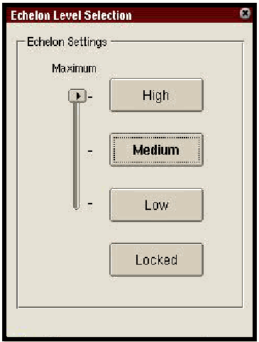
PDA 上で動く本フレームワークの「Echelon Level Selection」画面のスクリーンショットです。「Echelon Settings」の下に、「Maximum」と書かれた縦のスライダー（一番上の位置）と、縦に並んだ 4 つのボタン「High」「Medium」（現在のレベルとして強調）「Low」「Locked」があります。
Figure 4: Echelon Level Selector
図 4: エシュロンレベルセレクタ
When the slider is accessed, the echelon selector interacts with the kernel to request that change. Similarly, if one of the buttons is pressed, the echelon selector interacts with the kernel to request a transition to that corresponding level.
スライダが操作されると、エシュロンセレクタはカーネルとやり取りして、その変更を要求します。同様に、ボタンのいずれかが押されると、エシュロンセレクタはカーネルとやり取りして、対応するレベルへの遷移を要求します。
Interfaces
インターフェース
The details of the various interfaces illustrated in Figure 3 are discussed in the subsections that follow. Note that this discussion is at a conceptual level. Further details appear later in the paper.
図 3 に示した各種のインターフェースの詳細を、以下の小節で説明します。この議論は概念的なレベルのものであることに注意してください。さらに詳しい内容は、本書の後の部分に記載します。
Between Authentication/Echelon-related Components and MAF
認証・エシュロン関連のコンポーネントと MAF の間
The communication between the kernel and a handler is done via /proc/mAuth file. There are several different messages that can be communicated between the authentication handler and the kernel, as well as the echelon selector and the kernel. In general, two classes of messages exist: those to control the authentication process and those to control echelon transitions. The purpose of these messages is described below. To simplify developing handlers, a common messaging programming interface has been established for all communications and the according routines have been developed and consolidated into a library (see Appendix A for more details). Note that due to its nature the /proc/mAuth file does not work very well with certain implementations of high level I/O libraries including standard GNU libraries. Thus, low-level I/O functions (open, close, read, write) should be used instead.
カーネルとハンドラの間の通信は、/proc/mAuth ファイルを介して行われます。認証ハンドラとカーネルの間、およびエシュロンセレクタとカーネルの間では、複数の異なるメッセージをやり取りできます。一般に、メッセージには 2 つの種類があります。認証プロセスを制御するものと、エシュロンの遷移を制御するものです。これらのメッセージの目的を以下に説明します。ハンドラの開発を簡単にするため、すべての通信に共通のメッセージング用プログラミングインターフェースが定められており、対応するルーチンが開発されてライブラリにまとめられています（詳細は付録 A を参照）。/proc/mAuth ファイルは、その性質上、標準の GNU ライブラリを含む高水準 I/O ライブラリの一部の実装では、うまく動作しないことに注意してください。そのため、代わりに低水準の I/O 関数（open、close、read、write）を使うべきです。
•Handler Ready - When a handler process is ready to perform authentication it signals the kernel with this message. When kernel receives this message it first verifies that this process is indeed a registered handler and, if it is, it puts the process on a wait queue until there is a need to perform the authentication step.
•Handler Ready - ハンドラのプロセスが認証を行う準備ができると、このメッセージでカーネルに通知します。カーネルはこのメッセージを受け取ると、まず、このプロセスが実際に登録されたハンドラであることを検証し、そうであれば、認証ステップを実行する必要が生じるまで、そのプロセスを待ち行列に置きます。
•Authenticate - The kernel uses this message to wake up authentication handlers and have them perform an authentication step. The handlers are awakened one at the time in the same order they occur in the handler’s table.
•Authenticate - カーネルはこのメッセージを使って認証ハンドラを起こし、認証ステップを実行させます。ハンドラは、ハンドラ表に現れる順序と同じ順序で、1 つずつ起こされます。
•Poll - This message is used by the kernel to wake up authentication handlers periodically to have them check for the presence of a token.
•Poll - このメッセージは、カーネルが認証ハンドラを定期的に起こし、トークンの存在を確認させるために使います。
•Error - With this message, the kernel signals a specific handler to exit.
•Error - このメッセージで、カーネルは特定のハンドラに終了を知らせます。
•Authentication failed - This message is conveyed to the kernel to indicate a failed authentication attempt. The kernel verifies that the message comes from a registered handler.
•Authentication failed - このメッセージはカーネルに伝えられ、認証の試行が失敗したことを示します。カーネルは、メッセージが登録されたハンドラから来たことを検証します。
•Authentication successful - This message is conveyed to the kernel to indicate a successful authentication attempt. The kernel checks if this message indeed comes from the handler that is supposed to be running at a present time. When all of the registered handlers report about successful authentication the kernel will unlock the device.
•Authentication successful - このメッセージはカーネルに伝えられ、認証の試行が成功したことを示します。カーネルは、このメッセージが、現時点で動作しているはずのハンドラから実際に来たものかどうかを確認します。登録されたすべてのハンドラが認証の成功を報告すると、カーネルは端末のロックを解除します。
•Level n - This message is conveyed to the kernel from the echelon level selector and indicates that a transition to echelon level n should be attempted. An authentication handler may also use the message in special situations (e.g., a polling handler sensing the presence or absence of a token and needing to trigger a transition).
•Level n - このメッセージはエシュロンレベルセレクタからカーネルに伝えられ、エシュロンレベル n への遷移を試みるべきことを示します。認証ハンドラも、特別な状況（たとえば、ポーリング型ハンドラがトークンの存在または不在を検知して、遷移を引き起こす必要がある場合）で、このメッセージを使うことがあります。
•Maxl n - This message is conveyed to the kernel from the echelon level selector and indicates that the maximum echelon level for automatic transition attempts should be set to n.
•Maxl n - このメッセージはエシュロンレベルセレクタからカーネルに伝えられ、自動的な遷移の試行に対する最大のエシュロンレベルを n に設定すべきことを示します。
Note that the echelon level selector simply reads the /proc/mAuth file to obtain and display the current echelon status information.
エシュロンレベルセレクタは、現在のエシュロンの状態情報を取得して表示するために、/proc/mAuth ファイルを読み取るだけであることに注意してください。
Between the User Interface and Handler Authentication Components
ユーザーインターフェースと認証ハンドラのコンポーネントの間
Handlers and user interface components communicate through the UNIX domain socket /tmp/mAuthUI. From the handler side, all communication is done using standard system calls for sockets, which have been encapsulated in the handler library (see Appendix A for more details). The UI plug-in contains an object that handles all socket communications, routing incoming messages to the appropriate UI objects, and sending outgoing messages to handlers.
ハンドラとユーザーインターフェースのコンポーネントは、UNIX ドメインソケット /tmp/mAuthUI を介して通信します。ハンドラ側では、通信はすべて、ソケット用の標準のシステムコールを使って行われ、それらはハンドラライブラリにカプセル化されています（詳細は付録 A を参照）。UI プラグインには、すべてのソケット通信を扱うオブジェクトがあり、受信したメッセージを適切な UI オブジェクトへ転送し、送信するメッセージをハンドラへ送ります。
The format of the message is prefix:msg, where prefix is a message prefix and msg is the actual message to be delivered. The format of the actual message is implementation dependent, determined on the communications required between a particular authentication handler and user interface component. The only constraint is that a message should not contain a string terminator character '\0' (hex 00). When a developer adds a new component to the UI plug-in for some new functionality of an existing handler or a new authentication handler, she must choose a message prefix for this component, and then put a reference to the component into the init.cpp file.
メッセージの形式は prefix:msg で、prefix はメッセージの接頭辞、msg は配送される実際のメッセージです。実際のメッセージの形式は実装に依存し、特定の認証ハンドラとユーザーインターフェースコンポーネントの間で必要な通信によって決まります。唯一の制約は、メッセージに文字列終端文字 '\0'（16 進数の 00）を含めてはならないことです。開発者が、既存のハンドラの新しい機能や新しい認証ハンドラのために UI プラグインに新しいコンポーネントを追加するときは、このコンポーネントのメッセージ接頭辞を選び、そのコンポーネントへの参照を init.cpp ファイルに記述しなければなりません。
All message routing is based on the message prefix. Messages are delivered to the UI components via Qt’s Signal and Slot mechanism, simplifying their development. Note that, after it makes the routing decision, the routing object strips the prefix from the messages for delivery.
メッセージの転送はすべて、メッセージの接頭辞に基づいて行われます。メッセージは Qt の Signal and Slot の仕組みを介して UI コンポーネントに配送されるため、開発が簡単になります。転送を決定した後、転送を行うオブジェクトは、配送するメッセージから接頭辞を取り除くことに注意してください。
Between the UI Plug-in and the Kernel
UI プラグインとカーネルの間
In order for the UI plug-in to ensure that it is communicating with only registered handlers, it must obtain a valid list. The list of registered handlers is maintained by the kernel and can be read directly by the UI plug-in from the /proc/mAuth file entry.
UI プラグインが、登録されたハンドラとだけ通信していることを確実にするには、有効なリストを取得する必要があります。登録されたハンドラのリストはカーネルが保持しており、UI プラグインは /proc/mAuth のファイルエントリから直接読み取ることができます。
Between MAF and Policy Enforcement
MAF とポリシー強制の間
The interface between MAF and the policy enforcement mechanism is accomplished through two functions: PolicySelect and MultiModeUpdateHandlers. PolicySelect is implemented by the policy enforcement mechanism and MultiModeUpdateHandlers is implemented by MAF.
MAF とポリシー強制メカニズムの間のインターフェースは、PolicySelect と MultiModeUpdateHandlers という 2 つの関数で実現されます。PolicySelect はポリシー強制メカニズムが実装し、MultiModeUpdateHandlers は MAF が実装します。
The policy enforcement mechanism calls MultiModeUpdateHandlers only once, during the boot process. The input to this function is a list of registered handlers. MAF uses this list to initialize internal MAF data structures. For the reasons of security all subsequent calls to the MultimodeUpdateHandlers are ignored.
ポリシー強制メカニズムが MultiModeUpdateHandlers を呼び出すのは、ブート処理中の 1 回だけです。この関数への入力は、登録されたハンドラのリストです。MAF はこのリストを使って、MAF 内部のデータ構造を初期化します。セキュリティ上の理由から、MultimodeUpdateHandlers への以後の呼び出しはすべて無視されます。
PolicySelect is called by MAF when there is a need to change the current policy, typically upon successfully completing the necessary authentication steps for a requested level. This function has one integer argument that specifies the new effective policy level. In the current implementation, policy levels are represented as bitmaps. The bitmap values for different policy levels are shown in Table 1 below.
PolicySelect は、現在のポリシーを変更する必要があるとき、通常は、要求されたレベルに必要な認証ステップが成功裏に完了したときに、MAF によって呼び出されます。この関数には、新しく有効になるポリシーレベルを指定する整数の引数が 1 つあります。現在の実装では、ポリシーレベルはビットマップで表されます。各ポリシーレベルのビットマップの値を、下の表 1 に示します。
Table 1: Policy Level Bitmap Representation
表 1: ポリシーレベルのビットマップ表現
| Level | Binary | Hex |
|---|---|---|
| Level 0 (default) | 00000000 | 00 |
| Level 1 | 00000001 | 01 |
| Level 2 | 00000011 | 03 |
| Level 3 | 00000111 | 07 |
| Level 4 | 00001111 | 0F |
| レベル | 2 進数 | 16 進数 |
|---|---|---|
| レベル 0（既定） | 00000000 | 00 |
| レベル 1 | 00000001 | 01 |
| レベル 2 | 00000011 | 03 |
| レベル 3 | 00000111 | 07 |
| レベル 4 | 00001111 | 0F |
Between the Startup Script and the Kernel
起動スクリプトとカーネルの間
Communications with the kernel at system initialization is done via the /proc/policy file, using several messages:
システム初期化時のカーネルとの通信は、/proc/policy ファイルを介して、次のいくつかのメッセージを使って行われます。
•Load Policies - script initializes the policies to be enforced by the kernel on the device.
•Load Policies - スクリプトが、端末上でカーネルが強制するポリシーを初期化します。
•Load Handler List - script initializes the list of registered handlers to be maintained by the kernel.
•Load Handler List - スクリプトが、カーネルが保持する登録済みハンドラのリストを初期化します。
Process Flow
処理の流れ
To understand how the components work together, the process flow of initializing the system from boot up is summarized. The start up and synchronization process among components proceeds as follows:
コンポーネントがどのように連携して動作するかを理解するため、ブートアップからのシステム初期化の処理の流れをまとめます。コンポーネント間の起動と同期のプロセスは、次のように進みます。
•On system boot-up, the kernel module loads and enforces its default policy, which blocks I/O ports on the device, hardware keys, and access to the authentication handler’s code, as well as restricts access to authentication information within the file system exclusively to the appropriate authentication handler. The Linux proc file system (/proc) provides a communication channel between user space processes (UI components and handlers) and the kernel module. The kernel module registers a file in /proc file system (/proc/mAuth) for user space processes to trigger actions in the module.
•システムのブートアップ時に、カーネルモジュールが読み込まれ、既定のポリシーを強制します。このポリシーは、端末の I/O ポート、ハードウェアキー、認証ハンドラのコードへのアクセスを阻止し、ファイルシステム内の認証情報へのアクセスを、該当する認証ハンドラだけに制限します。Linux の proc ファイルシステム（/proc）は、ユーザー空間のプロセス（UI コンポーネントとハンドラ）とカーネルモジュールの間の通信経路を提供します。カーネルモジュールは、ユーザー空間のプロセスがモジュールの動作を引き起こせるように、/proc ファイルシステムにファイル（/proc/mAuth）を登録します。
•The system start-up script tells the kernel module (through the /proc/policy file) the filenames of the handler and any other related programs that need to be active. The kernel module sees that the handler programs are not running and starts them.
•システムの起動スクリプトは、ハンドラおよび動作している必要があるその他の関連プログラムのファイル名を、（/proc/policy ファイルを通じて）カーネルモジュールに伝えます。カーネルモジュールは、ハンドラのプログラムが動作していないことを確認して、それらを起動します。
•Upon startup, each handler program performs all necessary initialization and then reads from the /proc/mAuth file, which causes their execution to be suspended.
•起動すると、各ハンドラプログラムは必要な初期化をすべて行い、その後 /proc/mAuth ファイルから読み取ります。これにより、その実行は一時停止されます。
•OPIE and its plug-ins are also loaded during boot-up. The authentication module plug-in signals the kernel via the /proc/mAuth file entry that all components are ready and that the device should begin a user authentication process.
•OPIE とそのプラグインも、ブートアップ中に読み込まれます。認証モジュールのプラグインは、/proc/mAuth のファイルエントリを介して、すべてのコンポーネントの準備ができたことと、端末が利用者認証のプロセスを開始すべきことをカーネルに通知します。
•At this point all the components of the system are running and the default least privileges are being enforced.
•この時点で、システムのすべてのコンポーネントが動作しており、既定の最小権限が強制されています。
•The kernel module wakes up the first authentication handler, picture password, to resume processing.
•カーネルモジュールは、最初の認証ハンドラであるピクチャパスワードを起こして、処理を再開させます。
•The picture password handler reads the authentication information from the file system and signals its user interface component via a socket interface with the identity of the theme to display.
•ピクチャパスワードのハンドラは、ファイルシステムから認証情報を読み取り、ソケットインターフェースを介して、表示するテーマの識別子を自身のユーザーインターフェースコンポーネントに通知します。
•The user interface component displays the theme, accepts the image sequence, and returns that information to the handler.
•ユーザーインターフェースコンポーネントは、テーマを表示し、画像の並びを受け付けて、その情報をハンドラに返します。
•The handler uses the button to alphabet mapping to compute and verify the password. If successful, it signals its success to the kernel module via the /proc interface. If unsuccessful, it continues to use the user interface component to have the user retry.
•ハンドラは、ボタンと文字の対応付けを使ってパスワードを計算して検証します。成功した場合は、/proc インターフェースを介してカーネルモジュールに成功を通知します。失敗した場合は、引き続きユーザーインターフェースコンポーネントを使って、利用者にやり直させます。
•When the kernel module receives an indication of success from the handler, it suspends the handler, and initiates any other registered handlers. If this is the last handler, the kernel unlocks the device.
•カーネルモジュールは、ハンドラから成功の通知を受け取ると、そのハンドラを一時停止し、登録されている他のハンドラを起動します。これが最後のハンドラであれば、カーネルは端末のロックを解除します。
Authentication Mechanism Details
認証メカニズムの詳細
As mentioned earlier, each authentication mechanism consists of two parts, the authentication handler and authentication user interface. The authentication handler is a stand-alone process that provides the actual authentication, while the user interface part performs all necessary interactions with the user. In the current implementation, all user interface components are implemented as components of a plug-in for the OPIE desktop environment. To create additional authentication mechanisms, new user interface objects can be added to the existing plug-in. Note that it is possible to write an authentication mechanism, which neither interacts with the user nor requires a user interface component. For example the mechanism could be based on a proximity beacon whose signal triggers a transition, both upward (presence) and downward (non-presence).
前述のとおり、各認証メカニズムは、認証ハンドラと認証ユーザーインターフェースという 2 つの部分から成ります。認証ハンドラは、実際の認証を行う独立したプロセスであり、ユーザーインターフェースの部分は、利用者との必要なやり取りをすべて行います。現在の実装では、すべてのユーザーインターフェースコンポーネントは、OPIE デスクトップ環境用のプラグインのコンポーネントとして実装されています。認証メカニズムを追加するには、既存のプラグインに新しいユーザーインターフェースオブジェクトを追加することができます。利用者とやり取りせず、ユーザーインターフェースコンポーネントも必要としない認証メカニズムを書くことも可能であることに注意してください。たとえば、近接ビーコンの信号によって、上位（存在）にも下位（不在）にも遷移を引き起こすメカニズムが考えられます。
Recall that authentication handlers and user interface components communicate with each other using UNIX domain sockets. The framework provides high-level communication primitives for the authentication handlers and user interface components. Authentication handlers use high-level functions from the handler library (Appendix A), while user interface components use the Signal/Slot facility of the Qt library.
認証ハンドラとユーザーインターフェースコンポーネントは、UNIX ドメインソケットを使って互いに通信することを思い出してください。このフレームワークは、認証ハンドラとユーザーインターフェースコンポーネントに高水準の通信プリミティブを提供します。認証ハンドラはハンドラライブラリ（付録 A）の高水準関数を使い、ユーザーインターフェースコンポーネントは Qt ライブラリの Signal/Slot 機能を使います。
Since the user interface plug-in maintains a single socket for communication with all installed handlers, each handler must use message prefixes to identify the user interface component that is supposed to receive the message. A message prefix can be any alphanumeric string followed by a colon. When the user interface component receives the message, the prefix is already stripped by the message routing component of the plug-in.
ユーザーインターフェースのプラグインは、インストールされたすべてのハンドラとの通信に 1 つのソケットを保持するため、各ハンドラは、メッセージを受け取るべきユーザーインターフェースコンポーネントを識別するために、メッセージ接頭辞を使わなければなりません。メッセージ接頭辞には、コロンが後に続く任意の英数字の文字列を使えます。ユーザーインターフェースコンポーネントがメッセージを受け取る時点では、接頭辞はプラグインのメッセージ転送コンポーネントによってすでに取り除かれています。
Each authentication handler contains an infinite loop such as the one shown below.
各認証ハンドラには、以下に示すような無限ループが含まれます。
For (;;)
{
code = HandlerReady (PollInterval);
if ( code == Error ) EXIT // done automatically by HandlerReady
if ( code == Poll )
PerformPollAction
Else
PerformAuthentication
}The HandlerReady function notifies the kernel that the handler is ready to proceed. The argument of this function specifies a poll interval. When the kernel receives this call, it suspends the process until the handler is needed to perform an authentication step, the poll interval elapses, or some error condition occurs. The poll interval is an integer value that specifies the frequency in seconds for the kernel to awaken the handler. If the value of poll interval is zero, it means that the kernel should keep this handler suspended until the authentication is required or an error condition occurs. When this function returns to the process, its return code indicates the reason for the kernel awakening this handler: an error condition occurred, the poll interval elapsed, or an authentication step is needed.
HandlerReady 関数は、ハンドラが処理を進める準備ができたことをカーネルに通知します。この関数の引数は、ポーリング間隔を指定します。カーネルはこの呼び出しを受け取ると、ハンドラが認証ステップを行うために必要になるか、ポーリング間隔が経過するか、何らかのエラー状態が発生するまで、そのプロセスを一時停止します。ポーリング間隔は、カーネルがハンドラを起こす頻度を秒単位で指定する整数値です。ポーリング間隔の値が 0 の場合は、認証が必要になるかエラー状態が発生するまで、カーネルはこのハンドラを一時停止したままにすることを意味します。この関数がプロセスに戻るとき、その戻りコードは、カーネルがこのハンドラを起こした理由、すなわちエラー状態の発生、ポーリング間隔の経過、認証ステップの必要性のいずれかを示します。
The handler process must always terminate itself when it receives an error code from the kernel. There are two reasons for an error condition to occur. One reason is that the kernel is unable to process the handler because either there is another handler already registered or the handler is not listed in the handlers’ table, which is loaded into the kernel during system boot up. The other reason for an error condition is that a synchronous event signal is received while the process is in the HandlerReady call.
ハンドラのプロセスは、カーネルからエラーコードを受け取ったときは、必ず自身を終了させなければなりません。エラー状態が発生する理由は 2 つあります。1 つは、別のハンドラがすでに登録されているか、システムのブートアップ時にカーネルに読み込まれるハンドラ表にそのハンドラが載っていないために、カーネルがそのハンドラを処理できないことです。もう 1 つの理由は、プロセスが HandlerReady の呼び出し中に、同期イベントのシグナルを受け取ったことです。
When a handler process receives the return code indicating that the poll interval has expired, it must perform necessary actions such as checking the state of the physical token or a proximity to the beacon and repeat the loop again. Note that the polling actions taken should not consume a lot of time; otherwise, it will lead to poor system performance. The handler process can indicate a failed or successful authentication step to the kernel as a result of the polling action. When the process receives the return code indicating authentication is required, it must perform an authentication step, which might involve interacting with the user or interrogating the physical token. When the result of authentication step is decided, the handler process must tell the kernel about positive or negative outcome of the authentication step (See example in the next section).
ハンドラのプロセスは、ポーリング間隔が経過したことを示す戻りコードを受け取ったときは、物理トークンの状態やビーコンへの近接の確認など、必要な処理を行い、再びループを繰り返さなければなりません。行うポーリングの処理は、多くの時間を消費すべきではないことに注意してください。そうでないと、システムの性能が低下します。ハンドラのプロセスは、ポーリングの処理の結果として、認証ステップの失敗または成功をカーネルに示すことができます。プロセスは、認証が必要であることを示す戻りコードを受け取ったときは、認証ステップを行わなければなりません。これには、利用者とのやり取りや、物理トークンへの問い合わせが含まれる場合があります。認証ステップの結果が決まったら、ハンドラのプロセスは、認証ステップの肯定的または否定的な結果をカーネルに伝えなければなりません（次節の例を参照）。
In order to write an authentication mechanism for the MAF, a considerable number of details need to be addressed. The remainder of this section touches on these details by reviewing two example handlers and their user interface components: one, a non-polled interactive authentication handler, and the other, a polled token based handler.
MAF のための認証メカニズムを書くには、かなり多くの詳細に対処する必要があります。この節の残りでは、2 つのハンドラの例とそのユーザーインターフェースコンポーネントを見ることで、これらの詳細に触れます。1 つは非ポーリング型の対話式認証ハンドラ、もう 1 つはポーリング型のトークンベースのハンドラです。
Non-polled Handler Example
非ポーリング型ハンドラの例
The first example is an interactive authentication mechanism that is non-polled. This mechanism is very simple. When authentication step is needed the handler sends a message to the user interface component of the mechanism asking it to show a dialog box to the user. The dialog box contains two buttons as shown in Figure 5: Get In and Stay Out. Clicking on the top button, “Get In,” results in positive authentication, while clicking the bottom button, “Stay Out,” results in negative authentication.
最初の例は、非ポーリング型の対話式認証メカニズムです。このメカニズムは非常に単純です。認証ステップが必要になると、ハンドラは、このメカニズムのユーザーインターフェースコンポーネントにメッセージを送り、利用者にダイアログボックスを表示するよう求めます。ダイアログボックスには、図 5 に示すように、Get In と Stay Out の 2 つのボタンがあります。上のボタンである「Get In」をクリックすると認証は肯定的な結果になり、下のボタンである「Stay Out」をクリックすると認証は否定的な結果になります。
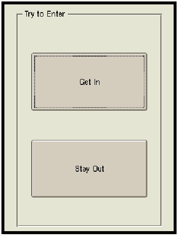
「Try to Enter」という枠見出しの全画面ダイアログのスクリーンショットです。大きなボタンが 2 つあり、上が「Get In」（フォーカスあり）、下が「Stay Out」です。
Figure 5: Simple Non-Polled Mechanism UI
図 5: 単純な非ポーリング型メカニズムの UI
When either button is pressed, the user interface component returns a reply to the authentication handler. Depending on the reply, the authentication handler signals the kernel a positive or negative authentication indication and then asks the kernel to suspend its execution until the next time authentication is needed. Since this handler does not need or use any polling actions, it calls the HandlerReady function with the polling interval of zero. The source code for this handler is located in the HandlerEX directory and the user interface component is located in the ExtendUI.cpp. The annotated fragments of the relevant parts of the code are as follows.
いずれかのボタンが押されると、ユーザーインターフェースコンポーネントは認証ハンドラに応答を返します。認証ハンドラは、その応答に応じて、肯定的または否定的な認証の結果をカーネルに通知し、次に認証が必要になるまで自身の実行を一時停止するようカーネルに求めます。このハンドラはポーリングの処理を必要とせず、使いもしないため、ポーリング間隔 0 で HandlerReady 関数を呼び出します。このハンドラのソースコードは HandlerEX ディレクトリにあり、ユーザーインターフェースコンポーネントは ExtendUI.cpp にあります。コードの該当部分に注釈を付けた断片は次のとおりです。
External library reference
外部ライブラリの参照
Lines 30 and 31 contain the reference to the standard IO library and the handler library.
30 行目と 31 行目に、標準 IO ライブラリとハンドラライブラリへの参照があります。
Authentication Function
認証関数
Lines 34 through 58 contain authentication step. The function starts with the declaration of the message buffer (line 38), which is used to communicate with the user interface part, and an integer variable that holds the length of the received message.
34 行目から 58 行目に、認証ステップがあります。この関数は、ユーザーインターフェースの部分との通信に使うメッセージバッファの宣言（38 行目）と、受信したメッセージの長さを保持する整数変数の宣言から始まります。
The line 42 uses the handler library function to set up the UNIX domain in socket that is used for further communication with the user interface component.
42 行目では、ハンドラライブラリの関数を使って、ユーザーインターフェースコンポーネントとの以後の通信に使う UNIX ドメインソケットを設定します。
The line 45 sends the message to the user interface component. The user interface component is designated by the prefix ‘EX:’ and the message is shw:Try to Enter. Upon reception of such message, the user interface component brings up the dialog box shown in Figure 5.
45 行目は、ユーザーインターフェースコンポーネントにメッセージを送ります。ユーザーインターフェースコンポーネントは接頭辞 ‘EX:’ で指定され、メッセージは shw:Try to Enter です。このメッセージを受け取ると、ユーザーインターフェースコンポーネントは、図 5 に示したダイアログボックスを表示します。
34 int ex_Login ()
35 {
36
37 int rLen;
38 char msgfromUI[100];
39
40 puts ( "handlerEX: exLogin()" );
41
42 UIAttach ();
43
44 //send msgtoUI to UI
45 TellUI ( "EX:shw:Try to Enter" );
46
47 //wait for reply and let msgfromUI be the recieved string
48 rLen = RecvUI ( msgfromUI, sizeof(msgfromUI ));
49
50 printf ( "Got: [%d] %s \n", rLen,msgfromUI );
51
52 TellUI ( "EX:clr:" );
53
54 if( strcmp( msgfromUI+3, "Login" ) != 0 ) return 0;
55 puts ( "Login Success" );
56
57 return -1;
58 }原本PDFの抜粋画像
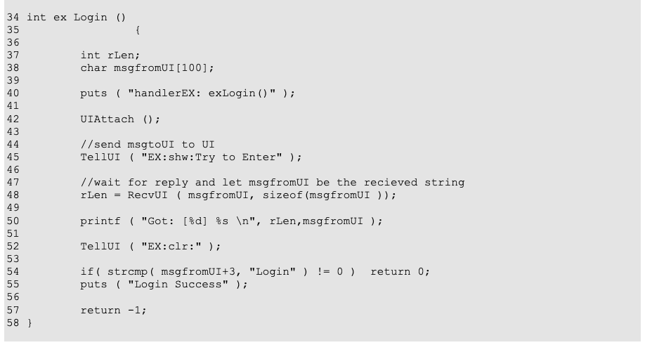
The code on line 48 waits for the reply message from the user interface component. When the message is received it is placed in the buffer msgfromUI and its length will be stored in the variable rLen.
48 行目のコードは、ユーザーインターフェースコンポーネントからの返信メッセージを待ちます。メッセージを受け取ると、バッファ msgfromUI に格納され、その長さが変数 rLen に保存されます。
The code on line 52 tells the user interface component to remove the dialog box from the screen.
52 行目のコードは、ユーザーインターフェースコンポーネントに、ダイアログボックスを画面から消すよう指示します。
The code on lines 54 and 55 processes the received message. If the message is not Login it means that the user did not press the ‘Get-In’ button, therefore the result of this authentication is negative and the return value of this function is FALSE. Otherwise the control continues to line 57 and the return value of the authentication step is FALSE.
54 行目と 55 行目のコードは、受け取ったメッセージを処理します。メッセージが Login でなければ、利用者が「Get-In」ボタンを押さなかったことを意味するため、この認証の結果は否定的となり、この関数の戻り値は FALSE になります。そうでなければ、制御は 57 行目へ進み、認証ステップの戻り値は FALSE になります。
Shutdown Function
シャットダウン関数
The code on lines 62-65 contains a ShutDown function. This function is called when the handler is terminated by the kernel. This function tells the user interface component to remove the dialog box from the screen so that the PDA’s palmtop is left in a consistent state.
62〜65 行目のコードには、ShutDown 関数があります。この関数は、ハンドラがカーネルによって終了させられるときに呼び出されます。この関数は、PDA が一貫した状態のままになるように、ユーザーインターフェースコンポーネントにダイアログボックスを画面から消すよう指示します。
62 void ShutDown (int x) {
63 TellUI ( "EX:clr:" );
64 exit(0);
65 }原本PDFの抜粋画像
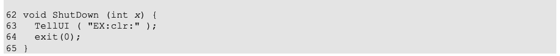
Main Function
メイン関数
The code on lines 68-98 contains the main function. This function can be used as a template for any non-polling handler.
68〜98 行目のコードには、メイン関数があります。この関数は、あらゆる非ポーリング型ハンドラのひな形として使えます。
68 int main (int argc, char * argv[]) {
69
70 if ( argc > 1 )
71 {
72 if ( !strcmp ( argv[1], "-d" ))
73 ex_Login();
74 else puts ( "Invalid argument " );
75 exit(1);
76 }
77
78 signal ( 15, ShutDown );
79
80 KrnlAttach ();
81
82 while(1) {
83 int result;
84
85 puts ( "Waiting for Event");
86 HandlerReady ( 0 );
87
88 puts ( "Running Authorization" );
89 result = ex_Login();
90
91 puts("Waiting for other handlers to finish\n");
92
93 if ( result )
94 TellKernel ( "AUTH-OK" );
95 else
96 TellKernel ( "AUTH-FAIL" );
97 }
98 }原本PDFの抜粋画像
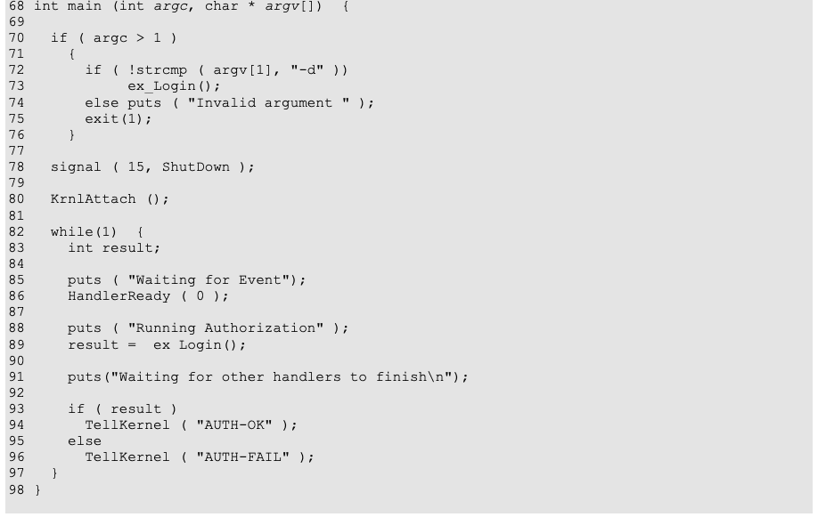
The code on lines 70-76 determines whether the handler was started by the kernel to handle an authentication step or started by the user for debugging purposes. If the later is true, it runs the authentication step and then terminates the process. Otherwise, it registers the ShutDown function as a handler for the ‘KILL’ signal (line 78) and initializes communication with the kernel (line 80). Note that if the kernel does not have the modifications implemented to support the multi-mode authentication framework, the HandlerReady function terminates the process at this point.
70〜76 行目のコードは、ハンドラが認証ステップを処理するためにカーネルによって起動されたのか、デバッグのために利用者によって起動されたのかを判定します。後者であれば、認証ステップを実行してからプロセスを終了します。そうでなければ、ShutDown 関数を ‘KILL’ シグナルのハンドラとして登録し（78 行目）、カーネルとの通信を初期化します（80 行目）。カーネルに、マルチモード認証フレームワークに対応するための修正が実装されていない場合は、この時点で HandlerReady 関数がプロセスを終了させることに注意してください。
If the process gets to line 82, it is ready to enter the authentication handler loop. The first action of the loop (line 86) is to signal the kernel that this handler is ready to perform its authentication step. Since polling functionality is not needed, the polling interval is set to 0. The exact description of the HandlerReady function is given in Appendix A. This function returns only when the kernel portion of MAF will determine that this handler should perform an authentication action. If the kernel signals an error condition to this handler, the HandlerReady function terminates this process.
プロセスが 82 行目に到達すると、認証ハンドラのループに入る準備ができています。ループの最初の動作（86 行目）は、このハンドラが認証ステップを行う準備ができたことをカーネルに通知することです。ポーリング機能は必要ないため、ポーリング間隔は 0 に設定されます。HandlerReady 関数の正確な説明は付録 A にあります。この関数は、MAF のカーネル部分が、このハンドラに認証の動作を行わせるべきだと判断したときにだけ戻ります。カーネルがこのハンドラにエラー状態を通知した場合は、HandlerReady 関数がこのプロセスを終了させます。
The code on line 89 calls the authentication function described above. This function performs user interaction and returns TRUE if the authentication was positive or FALSE if it was negative. The code on lines 93-96 tells the kernel about the result of this authentication and then goes back to the beginning of the handler loop.
89 行目のコードは、上で説明した認証関数を呼び出します。この関数は利用者とのやり取りを行い、認証が肯定的であれば TRUE を、否定的であれば FALSE を返します。93〜96 行目のコードは、この認証の結果をカーネルに伝え、ハンドラのループの先頭に戻ります。
Non-Polled Handler Example User Interface
非ポーリング型ハンドラの例のユーザーインターフェース
The user interface component for the example non-polled mechanism is derived from the standard Qwidget class. This class contains four member functions: incomingMessage, let_in, keep_out, and the class constructor. Also, this class contains four private fields that are described later.
非ポーリング型メカニズムの例のユーザーインターフェースコンポーネントは、標準の Qwidget クラスから派生しています。このクラスには、incomingMessage、let_in、keep_out、クラスのコンストラクタの 4 つのメンバー関数があります。また、このクラスには、後で説明する 4 つの private フィールドがあります。
Constructor
コンストラクタ
The constructor function of this class is defined on lines 40-60. The function of this constructor is to initialize internal variables, create a dialog box is used for user interaction, and set up all necessary Signal/Slot connections. The constructor accepts three arguments:
このクラスのコンストラクタ関数は、40〜60 行目で定義されています。このコンストラクタの役割は、内部変数を初期化し、利用者とのやり取りに使うダイアログボックスを作成し、必要な Signal/Slot の接続をすべて設定することです。コンストラクタは 3 つの引数を受け取ります。
•Mux – a reference to the message router object.
•Mux – メッセージ転送オブジェクトへの参照。
•Parent – a reference to the parent widget
•Parent – 親ウィジェットへの参照
•Name – name of the user interface widget.
•Name – ユーザーインターフェースウィジェットの名前。
Only the first argument is required during creation of the object, if the other two are not specified the default values is used. The value of the first argument (Mux) is discussed later in this section.
オブジェクトの作成時に必要なのは最初の引数だけで、残りの 2 つが指定されない場合は、既定値が使われます。最初の引数（Mux）の値については、この節の後の部分で説明します。
The code on lines 43-47 sets up the dialog box to be used in full screen mode. Note that this is preferred method to create full screen dialog boxes from the plug-in. All other methods might leave PDA desktop in inconsistent state.
43〜47 行目のコードは、ダイアログボックスを全画面モードで使うように設定します。プラグインから全画面ダイアログボックスを作成する際には、この方法が推奨されます。他の方法では、PDA のデスクトップが一貫しない状態になるおそれがあります。
The code on lines 48-57 creates two push buttons and connects their Signals to the Slots implemented by this component.
48〜57 行目のコードは、2 つのプッシュボタンを作成し、それらの Signal を、このコンポーネントが実装する Slot に接続します。
40 extendUI::extendUI (MsgListener & Mux, QWidget * parent = 0,
const char * name = 0) : QWidget( parent, name ), msgMux(&Mux)
41 {
42
43 reparent ( 0, Qt::WStyle_Customize |
44 Qt::WStyle_NoBorder |
45 Qt::WStyle_StaysOnTop, QPoint(0,0) );
46 setFixedSize( qApp->desktop() -> size() );
47
48 buttongroup_login = new QButtonGroup( tr("Hello"), this );
49 buttongroup_login -> setGeometry( 20, 10, 200, 300 );
50 QPushButton *pushbutton_getin = new QPushButton( tr( "Get In" ),
buttongroup_login );
51 pushbutton_getin -> setGeometry( 20, 60, 160, 80 );
52 pushbutton_getin -> setFocus();
53 connect( pushbutton_getin, SIGNAL( clicked() ), this, SLOT( let_In() ) );
54
55 QPushButton *pushbutton_stayout = new QPushButton( "Stay Out",
buttongroup_login );
56 pushbutton_stayout -> setGeometry( 20, 180, 160, 80 );
57 connect( pushbutton_stayout, SIGNAL( clicked() ), this, SLOT( keep_Out() )
);
58
59
60 }原本PDFの抜粋画像
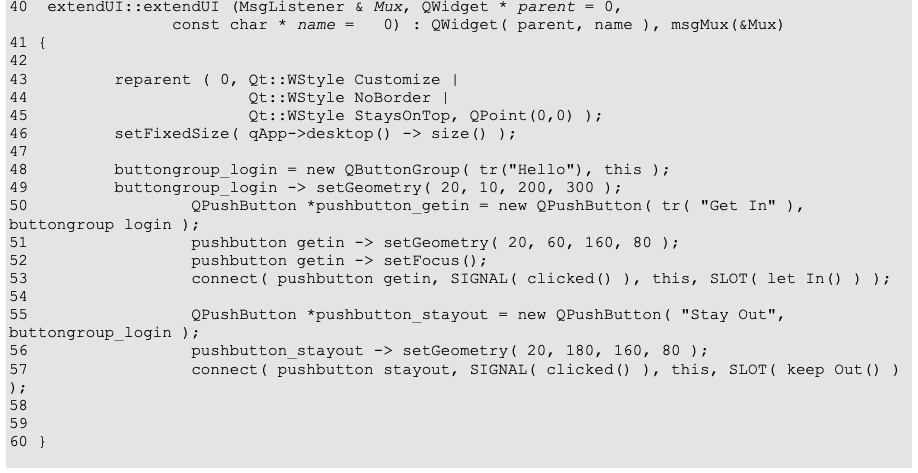
Message Processing Function
メッセージ処理関数
The code on lines 65-83 processes incoming messages from the authentication handler. This function is called by the message router component of the plug-in when every time it receives a message with the destination prefix EX. There are two possible messages: shw and clr. The shw message causes dialog box to be displayed on the PDA palmtop. The message could have additional text argument, which is displayed in the top part of the dialog box. The clr message causes dialog box to be removed from the screen.
65〜83 行目のコードは、認証ハンドラから届くメッセージを処理します。この関数は、プラグインのメッセージ転送コンポーネントが、宛先の接頭辞が EX のメッセージを受け取るたびに呼び出されます。メッセージには shw と clr の 2 種類があります。shw メッセージは、PDA の画面にダイアログボックスを表示します。メッセージには追加のテキスト引数を付けることができ、それはダイアログボックスの上部に表示されます。clr メッセージは、ダイアログボックスを画面から取り除きます。
The code on lines 68-70 separates command part of the message from the attached text. Note that every command has to be followed by the colon even if there is no additional text attached.
68〜70 行目のコードは、メッセージのコマンド部分を、付随するテキストから分離します。追加のテキストが付いていない場合でも、どのコマンドにもコロンを続けなければならないことに注意してください。
The code on lines 72-77 processes the shw message. Lines 73-74 save the socket address of the handler that send this message, which is required for sending replies back to the handler. The code on lines 75-77 sets the text to be displayed in the top part of the dialog box, displays the dialog box, and makes it the topmost window on the PDA palmtop.
72〜77 行目のコードは、shw メッセージを処理します。73〜74 行目は、このメッセージを送ったハンドラのソケットアドレスを保存します。これは、ハンドラへ返信を送るために必要です。75〜77 行目のコードは、ダイアログボックスの上部に表示するテキストを設定し、ダイアログボックスを表示して、PDA のパームトップの最前面のウィンドウにします。
65 void extendUI::incomingMessage (struct sockaddr * addr, unsigned aLen, const char * msg) {
66 qDebug( "Got Msg '%s'\n", msg );
67
68 char * pfxEnd = strchr ( msg , ':' );
69 if ( pfxEnd == NULL ) return;
70 int prefixLen = pfxEnd - msg;
71
72 if ( strncmp ( "shw", msg , prefixLen ) == 0 ) {
73 memcpy ( rAddr, addr, aLen );
74 rAddrLen = aLen;
75 buttongroup_login -> setTitle( msg + prefixLen + 1 );
76 show();
77 raise ();
78 } else if ( strncmp ( "clr", msg , prefixLen ) == 0 ) {
79 memcpy ( rAddr, addr, aLen );
80 rAddrLen = aLen;
81 hide();
82 }
83 }原本PDFの抜粋画像
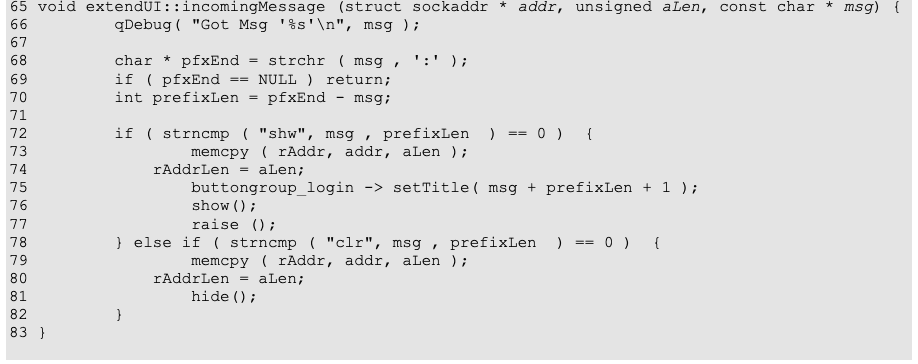
The code on lines 78-81 handles the clr message. It erases the return address of the handler and hides the dialog box.
78〜81 行目のコードは、clr メッセージを扱います。ハンドラの返信先アドレスを消去し、ダイアログボックスを隠します。
Button Click Processing Functions
ボタンクリック処理関数
The two functions on lines 86-98 handle the user interaction. The function let_In handles the click on the ‘Get In’ button and the function keep_Out handles the click on the ‘Stay Out’ button. Both of these functions are bound to their buttons by the constructor function described above.
86〜98 行目の 2 つの関数は、利用者とのやり取りを扱います。関数 let_In は ‘Get In’ ボタンのクリックを扱い、関数 keep_Out は ‘Stay Out’ ボタンのクリックを扱います。これらの関数はどちらも、上で説明したコンストラクタ関数によって、それぞれのボタンに結び付けられます。
These functions work very similar to each other. The message is prepared on lines 88 and 95, and then sent to the handler by the code on the lines 89 and 96. The public member function of the message router is used to send the message. The address of the handler was saved by the message processing function.
これらの関数は、互いによく似た動作をします。メッセージは 88 行目と 95 行目で準備され、89 行目と 96 行目のコードでハンドラへ送られます。メッセージの送信には、メッセージ転送オブジェクトの public メンバー関数が使われます。ハンドラのアドレスは、メッセージ処理関数によって保存されています。
86 void extendUI::let_In () {
87 char Seq[256];
88 sprintf ( Seq, "EX:Login");
89 if ( -1 == msgMux->SendMsg ( Seq , (struct sockaddr*)rAddr,rAddrLen) )
90 perror ( "Error Sending the sequence" );
91 }原本PDFの抜粋画像
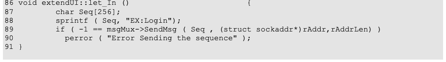
93 void extendUI::keep_Out () {
94 char Seq[256];
95 sprintf ( Seq, "EX:Stay Out");
96 if ( -1 == msgMux->SendMsg ( Seq , (struct sockaddr*)rAddr,rAddrLen) )
97 perror ( "Error Sending the sequence" );
98 }原本PDFの抜粋画像
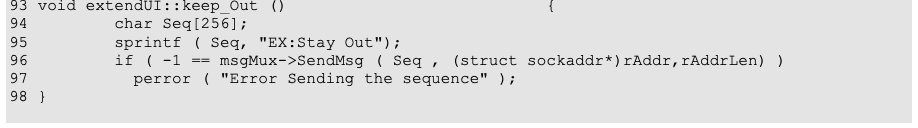
Creating and Registering User Interface Objects
ユーザーインターフェースオブジェクトの作成と登録
The following code was taken from the file init.cpp in the ‘PlugIn’ directory. The function ‘InitializeModules’ is responsible for creation of all user interface component objects defined in the plug-in. It is also responsible for assigning message prefixes to the user interface components. The component described above is created by the code on line 48, and it is bound to the prefix EX by the code on line 55.
次のコードは、‘PlugIn’ ディレクトリの init.cpp ファイルから取ったものです。関数 ‘InitializeModules’ は、プラグインで定義されたすべてのユーザーインターフェースコンポーネントのオブジェクトを作成する役割を持ちます。また、ユーザーインターフェースコンポーネントにメッセージ接頭辞を割り当てる役割も持ちます。上で説明したコンポーネントは 48 行目のコードで作成され、55 行目のコードで接頭辞 EX に結び付けられます。
44 void InitializeModules (MsgListener & msgMux, QWidget *){
45
46 picPassUI *picPass = new picPassUI( msgMux,0,"picPass" );
47 picPassChUI *picPassCh = new picPassChUI( msgMux, 0,"picPassCh" );
48 extendUI *extend = new extendUI( msgMux, 0, "extend" );
49 supplUI *suppl = new supplUI ( msgMux, 0, "suppl" );
50 suppl1UI *suppl1 = new suppl1UI ( msgMux, 0, "suppl1" );
51 MMCAuthUI *mmcAuth = new MMCAuthUI ( msgMux, 0, "mmcAuth" );
52
53 msgMux.connect ( "PP", picPass , SLOT(incomingMessage(struct sockaddr
*,unsigned,const char *)));
54 msgMux.connect ( "PPC", picPassCh , SLOT(incomingMessage(struct sockaddr
*,unsigned,const char *)));
55 msgMux.connect ( "EX", extend , SLOT(incomingMessage(struct sockaddr
*,unsigned,const char *)));
56 msgMux.connect ( "FH", suppl , SLOT(incomingMessage(struct sockaddr
*,unsigned,const char *)));
57 msgMux.connect ( "PRE1", suppl1 , SLOT(incomingMessage(struct sockaddr
*,unsigned,const char *)));
58 msgMux.connect ( "MMC", mmcAuth, SLOT(incomingMessage(struct sockaddr
*,unsigned,const char *)));
59 }原本PDFの抜粋画像
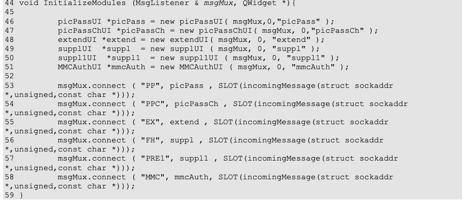
Polling Handler Example
ポーリング型ハンドラの例
The second example handler is a polling handler. It uses a MultiMedia Card (MMC) as a physical token. This handler indicates successful authentication if it detects a card in the slot with the file LetMeIn in the root directory of the card. This handler uses the polling facility of the multiple authentication framework to detect insertion and ejection of the card. When the insertion of the card is detected, the handler triggers an automatic transition to the higher echelon level. When the card is removed, the handler immediately notifies the kernel that it’s positive authentication is not valid anymore, and the kernel should switch to the lower echelon level. The source code for this handler is located in the file handlerMMC.c.
2 つ目の例のハンドラは、ポーリング型のハンドラです。物理トークンとして MultiMedia Card（MMC）を使います。このハンドラは、スロットにあるカードのルートディレクトリにファイル LetMeIn があることを検出すると、認証の成功を示します。このハンドラは、マルチ認証フレームワークのポーリング機能を使って、カードの挿入と取り出しを検出します。カードの挿入を検出すると、ハンドラは、より高いエシュロンレベルへの自動遷移を引き起こします。カードが取り外されると、ハンドラは直ちにカーネルに、このハンドラによる肯定的な認証がもはや有効ではないことを通知し、カーネルは、より低いエシュロンレベルに切り替えるべきです。このハンドラのソースコードは、ファイル handlerMMC.c にあります。
Although this authentication mechanism has a user interface component, its functionality is not substantially different from the user interface component of the non-polling handler described above. In fact, as shown in Figure 6, the user interface is simpler, only displaying a message to prompt the user to either insert the token or press the ‘Cancel’ button to terminate the authentication step. Therefore, no further details are provided in this document.
この認証メカニズムにもユーザーインターフェースコンポーネントがありますが、その機能は、上で説明した非ポーリング型ハンドラのユーザーインターフェースコンポーネントと、実質的に違いはありません。実際、図 6 に示すように、ユーザーインターフェースはより単純で、トークンを挿入するか、‘Cancel’ ボタンを押して認証ステップを終了するよう利用者に促すメッセージを表示するだけです。したがって、本書ではこれ以上の詳細は示しません。
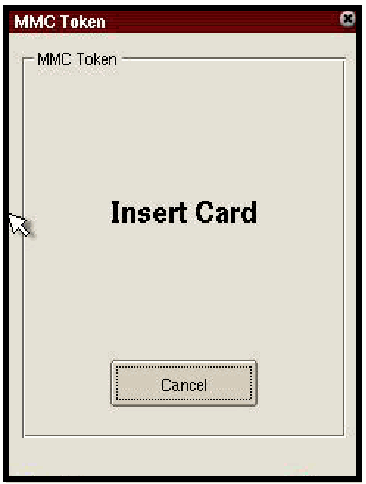
「MMC Token」という題のウィンドウのスクリーンショットです。「MMC Token」と書かれた枠の中に、大きく「Insert Card」と表示され、その下に「Cancel」ボタンがあります。
Figure 6: Simple Polled Mechanism UI
図 6: 単純なポーリング型メカニズムの UI
Card Interface Functions
カードインターフェース関数
Two functions, SlotEmpty and CheckCard, provide all necessary interfaces to the MMC card. Under the “Familiar” distribution of Linux the MMC card is treated as a removable storage device. When the card is inserted into slot, the kernel mounts it under the /mnt/card directory. When the card is removed, the kernel automatically unmounts this directory.
SlotEmpty と CheckCard, の 2 つの関数が、MMC カードへの必要なインターフェースをすべて提供します。Linux の “Familiar” ディストリビューションでは、MMC カードは取り外し可能なストレージデバイスとして扱われます。カードがスロットに挿入されると、カーネルはそれを /mnt/card ディレクトリにマウントします。カードが取り外されると、カーネルはこのディレクトリを自動的にアンマウントします。
The function SlotEmpty checks if there is a card currently inserted into the slot by going through the table of mounted file systems and looking for an entry specific to the MMC card. If such entry exists, the function returns FALSE, indicating that MMC slot is not empty; otherwise, it returns TRUE. The function CheckCard checks if the card contains the LetMeIn file in its root directory.
関数 SlotEmpty は、マウントされたファイルシステムの表をたどり、MMC カードに固有のエントリを探すことで、現在スロットにカードが挿入されているかどうかを確認します。そのようなエントリがあれば、関数は FALSE を返し、MMC スロットが空でないことを示します。なければ TRUE を返します。関数 CheckCard は、カードのルートディレクトリにファイル LetMeIn があるかどうかを確認します。
88 int SlotEmpty () {
89 int f = open ( "/proc/mounts", O_RDONLY );
90 char buf[8192];
91
92 memset ( buf, 0, sizeof(buf));
93
94 if ( f >= 0 )
95 {
96 char *b;
97 read ( f, buf,4096);
98 close (f);
99 b = strstr ( buf, "/dev/mmc/part1 /mnt/card vfat rw,sync" );
100 if ( b == NULL ) return -1;
101 return 0;
102 }
103 else return -1;
104 }原本PDFの抜粋画像
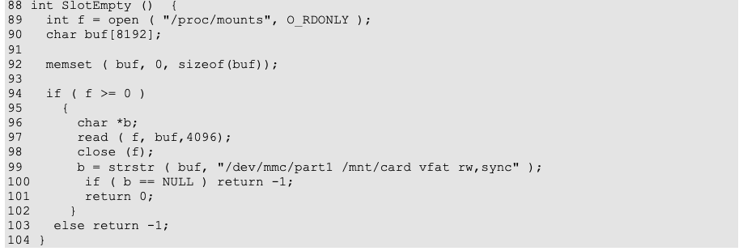
107 int CheckCard () {
108 return ! access ( "/mnt/card/LetMeIn", R_OK );
109 }原本PDFの抜粋画像
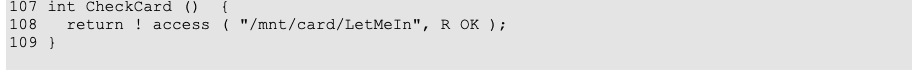
Authentication Function
認証関数
The authentication function performed by this handler is very similar in structure to the authentication function of the non-polling handler. The code on line 45 checks if there is a valid card in the slot. If there is a valid card in the slot, the function returns TRUE indicating successful authentication. Otherwise the function enters the interactive part. The code on line 47 asks the library to prepare the communication channel to the user interface part, and the code on line 51 sends a message to user interface component, which causes the dialog box shown in Figure 6 to appear on the screen. After dialog box is shown to the user, the function enters a loop that waits for the card insertion or cancellation from the user.
このハンドラが行う認証関数は、構造の点で、非ポーリング型ハンドラの認証関数とよく似ています。45 行目のコードは、スロットに有効なカードがあるかどうかを確認します。スロットに有効なカードがあれば、関数は TRUE を返し、認証の成功を示します。なければ、関数は対話的な部分に入ります。47 行目のコードは、ユーザーインターフェース部分への通信チャネルを準備するようライブラリに求め、51 行目のコードは、ユーザーインターフェースコンポーネントにメッセージを送り、図 6 に示すダイアログボックスを画面に表示させます。ダイアログボックスが利用者に表示された後、関数は、カードの挿入または利用者による取り消しを待つループに入ります。
38 int ex_Login () {
39
40 int rLen;
41 char msgfromUI[100];
42
43 puts ( "handlerMMC: exLogin()" );
44
45 if ( CheckCard () ) return -1;
46
47 UIAttach ();
48
49
50 //send msgtoUI to UI
51 TellUI ( "MMC:shw:Insert token" );
52
53 while ( SlotEmpty ())
54 if ( PollUI () )
55 {
56 puts ( "Have Events" );
57 rLen = RecvUI ( msgfromUI, sizeof(msgfromUI ));
58 printf ( "Got: [%d] %s \n", rLen,msgfromUI );
59 if( strcmp( msgfromUI+4, "Cancel" ) == 0 )
60 {
61 TellUI ( "MMC:clr:" );
62 return 0;
63 }
64 }
65 else { sleep (1); puts ( "No Event" ); }
66
67 sleep ( 1 );
68
69 if ( ! CheckCard ())
70 {
71 int i;
72 for ( i = 0 ; i < 3 ; i ++ )
73 {
74 TellUI ( "MMC:shw:Wrong Card" );
75 sleep ( 1);
76 TellUI ( "MMC:shw:" );
77 sleep ( 1);
78 }
79 TellUI ( "MMC:clr:" );
80 return 0;
81 }
82
83 TellUI ( "MMC:clr:" );
84 return -1;
85 }原本PDFの抜粋画像
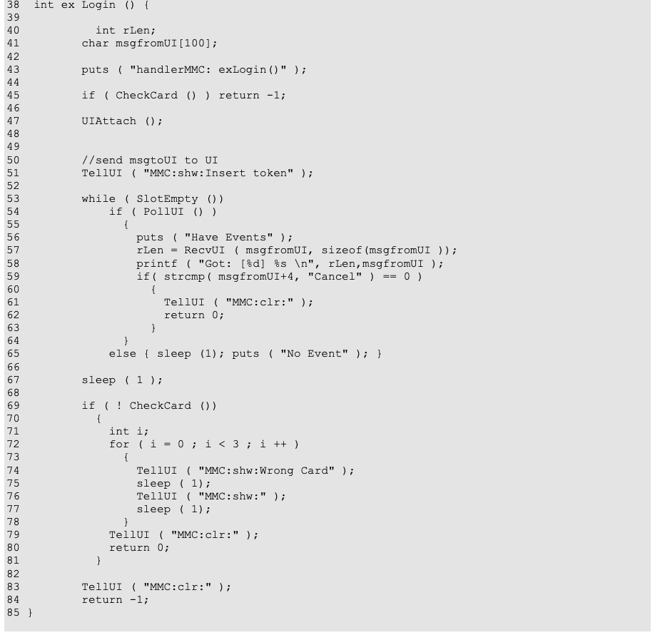
The code on line 54 checks if there are any messages from the user interface. If the user has pressed a cancel button, the function PollUI will return true and the code on lines 56-63 will execute. The lines 57-59 receive the message from the user interface and check if it is indeed a cancel message, in which case the code on lines 61and 62 removes the dialog box from the screen and returns FALSE. If there were no messages from the user interface the handler sleeps for one second and then returns to the beginning of the loop (lines 53-65).
54 行目のコードは、ユーザーインターフェースからのメッセージがあるかどうかを確認します。利用者が取り消しボタンを押していれば、関数 PollUI は true を返し、56〜63 行目のコードが実行されます。57〜59 行目は、ユーザーインターフェースからメッセージを受け取り、それが実際に取り消しのメッセージであるかどうかを確認します。取り消しのメッセージであれば、61〜62 行目のコードが、ダイアログボックスを画面から消して FALSE を返します。ユーザーインターフェースからのメッセージがなければ、ハンドラは 1 秒間スリープし、ループの先頭（53〜65 行目）に戻ります。
When the user inserts an MMC card into the slot the loop is terminated and the code on the lines 69-84 determines if it was an authorized card and returns TRUE in the event of the successful authentication. Otherwise, it notifies the user that the inserted card is not valid (lines 71-80) and returns FALSE. Regardless of the result of this authentication this function always removes the dialog box before returning back to the main authentication loop.
利用者がスロットに MMC カードを挿入すると、ループは終了し、69〜84 行目のコードが、それが認可されたカードかどうかを判定して、認証に成功した場合は TRUE を返します。そうでなければ、挿入されたカードが有効でないことを利用者に通知し（71〜80 行目）、FALSE を返します。この認証の結果にかかわらず、関数はメインの認証ループに戻る前に、必ずダイアログボックスを消します。
Main Function
メイン関数
The main function of the handler contains the authentication loop. Lines 116-123 are exactly the same as for the non-polling handler. The code determines whether the handler was started by the kernel to serve as an authentication handler or launched by the user for debugging purposes. Lines 126-133 are exactly the same as for the non-polling handler. However, in this case the HandlerReady function is called with non-zero polling interval. Since the polling interval is a constant, the kernel schedules polling of the handler to occur every three seconds.
ハンドラのメイン関数には、認証ループがあります。116〜123 行目は、非ポーリング型ハンドラの場合とまったく同じです。このコードは、ハンドラが、認証ハンドラとして機能するようにカーネルによって起動されたのか、デバッグのために利用者によって起動されたのかを判定します。126〜133 行目も、非ポーリング型ハンドラの場合とまったく同じです。ただし、この場合、HandlerReady 関数は 0 以外のポーリング間隔で呼び出されます。ポーリング間隔は定数であるため、カーネルは、ハンドラのポーリングが 3 秒ごとに行われるようにスケジュールします。
113 int main (int argc, char * argv[]) {
114 int lastState = 0;
115 int cardState = 0;
116
117 if ( argc > 1 )
118 {
119 if ( !strcmp ( argv[1], "-d" ))
120 ex_Login();
121 else puts ( "Invalid argument " );
122 exit(1);
123 }
124
125
126 KrnlAttach ();
127
128 while(1) {
129 int result;
130
131 lastState = cardState;
132
133 puts ( "Waiting for Event");
134 result = HandlerReady ( 3 );
135
136 if ( result == mmPoll )
137 {
138 puts ( "Checking for card \n" );
139
141 cardState = CheckCard ();
142
143 if ( cardState != lastState )
144 { puts ( "Card State Changed" );
145 if ( !cardState )
146 {
147 TellKernel ( "AUTH-FAIL" );
148 }
149 else
150 {
156 TellKernel ( "LEVEL 1" );
157 }
158 }
159 continue;
160 }
161
162
163 TellKernel ( ex_Login() ? "AUTH-OK" : "AUTH-FAIL" );
164 }
165 }原本PDFの抜粋画像
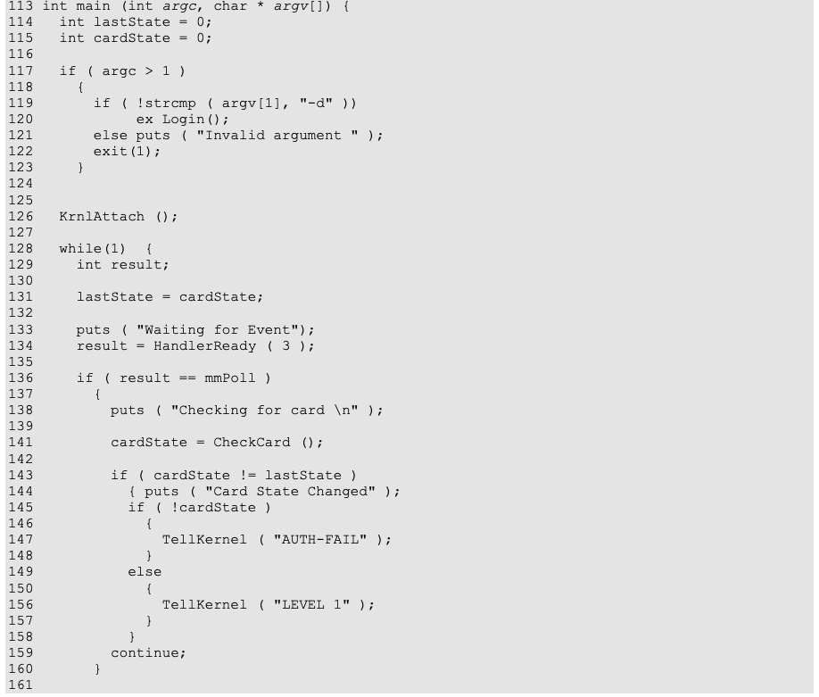
The if statement on line 136 determines whether the handler process was awakened to perform a polling step or to perform an authentication action. The code on lines 138-159 checks if the there is card in the slot and if the slot state is different than it was during the last poll cycle. It sends a message to the kernel to either initiate a transition to the higher echelon level (if the card was inserted) or to signal that the positive authentication given by this handler is no longer valid. Note that although the message to the kernel on the line 156 asks the kernel to transition to echelon level 1, the integer value on the level is ignored because of the special treatment of LEVEL messages coming from handlers. The effect of sending a LEVEL 1 message to the kernel causes the next call to HandlerReady, at the beginning of the loop, to return with the indication that an authentication step should be performed. The code on the line 163 calls the authentication step function and then informs the kernel about the outcome of the authentication.
136 行目の if 文は、ハンドラのプロセスが、ポーリングステップを行うために起こされたのか、認証動作を行うために起こされたのかを判定します。138〜159 行目のコードは、スロットにカードがあるかどうか、およびスロットの状態が前回のポーリング周期のときと異なるかどうかを確認します。そして、カードが挿入された場合はより高いエシュロンレベルへの遷移を開始するように、またはこのハンドラによる肯定的な認証がもはや有効でないことを知らせるように、カーネルにメッセージを送ります。156 行目のカーネルへのメッセージは、エシュロンレベル 1 への遷移をカーネルに求めていますが、ハンドラから届く LEVEL メッセージは特別に扱われるため、そのレベルの整数値は無視されることに注意してください。LEVEL 1 メッセージをカーネルに送ると、ループの先頭での次の HandlerReady 呼び出しは、認証ステップを実行すべきことを示す状態で戻ります。163 行目のコードは、認証ステップの関数を呼び出し、その後、認証の結果をカーネルに通知します。
Kernel Details
カーネルの詳細
The Multi-mode Authentication Module (MultiAuth/MultiMode/MultiMode.c) is at the heart of MAF. It is the kernel component of MAF and uses a table driven approach for controlling handlers and transitioning between echelon levels. The following sections describe it in detail.
マルチモード認証モジュール（MultiAuth/MultiMode/MultiMode.c）は、MAF の中核です。これは MAF のカーネルコンポーネントであり、ハンドラの制御とエシュロンレベル間の遷移に、表駆動の方式を用います。以下の各節で、これを詳しく説明します。
Functional Description
機能の説明
The main task of the Multi-mode Authentication Module (MAM) is to monitor and schedule the authentication handlers’ execution. At initialization, MAM establishes a communication channel with the handlers, the echelon level selector, and the UI plug-in through the mAuth entry of the /proc pseudo-file system. Programs running in user space can send the kernel the following one-line messages by writing them into /proc/mAuth:
マルチモード認証モジュール（MAM）の主な役割は、認証ハンドラの実行を監視し、スケジュールすることです。初期化時に、MAM は、/proc 疑似ファイルシステムの mAuth エントリを介して、ハンドラ、エシュロンレベルセレクタ、UI プラグインとの通信チャネルを確立します。ユーザー空間で動作するプログラムは、次の 1 行のメッセージを /proc/mAuth に書き込むことで、カーネルに送ることができます。
•ATTACH n
•ATTACH n
•LEVEL n
•LEVEL n
•MAX n
•MAX n
•AUTH-OK
•AUTH-OK
•AUTH-FAIL
•AUTH-FAIL
User space programs can also read the following multi-line status information maintained by MAM from the kernel using the /proc/mAuth entry:
ユーザー空間のプログラムは、/proc/mAuth エントリを使って、MAM が保持する次の複数行の状態情報をカーネルから読み取ることもできます。
Level: MaxLevel/CurrentLevel/DesiredLevel
Lvl Req AState PState PInt PID Com
l r a p poll pid name
...The status information represents the contents of the handler table MAM uses to schedule handlers and manage echelon state. The first line contains the current echelon level of the framework, the desired level to which a transition request has been made, and the maximum echelon level to which an automatically initiated (versus manually initiated) transition can occur. Each entry in the list that follows includes the handler’s executable name (name), its process identifier (pid) and state (p), its authentication status (a), a polling interval (poll), and an authentication request status (r), for some echelon level (l) (see Appendix C for details).
この状態情報は、MAM がハンドラのスケジュールとエシュロンの状態の管理に使うハンドラ表の内容を表します。最初の行には、フレームワークの現在のエシュロンレベル、遷移要求が出された目的のレベル、および（手動ではなく）自動的に開始される遷移が可能な最大のエシュロンレベルが含まれます。続くリストの各エントリには、あるエシュロンレベル (l について、ハンドラの実行ファイル名（name）、プロセス識別子（pid）と状態（p）、認証状態（a）、ポーリング間隔（poll）、認証要求の状態（r）が含まれます（詳細は付録 C を参照）。
The entire operation of MAM revolves around the handler table. The table is similar in structure to the standard Unix process table and its purpose is to represent the current state of the MAF system. The name of each handler and its level are pre-loaded at boot time and never change. The other entries change continually to represent the current state of the authentication framework. The kernel constantly examines the handler table to determine if a certain handler has to be restarted or needs to perform an authentication stop, if the system is ready to advance to the higher echelon level, or if the effective echelon level has to be lowered.
MAM の動作全体は、ハンドラ表を中心に回っています。この表は、標準の Unix のプロセステーブルと構造が似ており、MAF システムの現在の状態を表すことが目的です。各ハンドラの名前とそのレベルは、ブート時に事前に読み込まれ、変更されることはありません。その他のエントリは、認証フレームワークの現在の状態を表すように絶えず変化します。カーネルは、ハンドラ表を常に調べて、あるハンドラを再起動する必要があるか、認証の停止を行う必要があるか、システムがより高いエシュロンレベルに進む準備ができているか、有効なエシュロンレベルを下げる必要があるかを判断します。
At initialization, MAM resets the handler table to zero. The handler table is partially built by the Policy Enforcement Module – PEM, whose code is located in PDAEnforcement/PolicyModule/Policy.c. The start-up script tells PEM the filenames of the handlers and any other programs that need to be continually active, by writing them into the /proc/policy entry of the /proc file system. The handler list written into /proc/policy has the following format:
初期化時に、MAM はハンドラ表を 0 にリセットします。ハンドラ表は、ポリシー強制モジュール（PEM）によって部分的に構築されます。そのコードは PDAEnforcement/PolicyModule/Policy.c にあります。起動スクリプトは、ハンドラおよび常に動作している必要があるその他のプログラムのファイル名を、/proc ファイルシステムの /proc/policy エントリに書き込むことで、PEM に伝えます。/proc/policy に書き込まれるハンドラのリストの形式は、次のとおりです。
<watch>
</usr/bin/HandlerA 1>
</usr/bin/HandlerB 1>
</usr/bin/HandlerC 2>
...where watch is a keyword that identifies the /proc/policy contents, and each subsequent line contains a handler’s executable filename and a echelon level. For example, the line:
ここで、watch は /proc/policy の内容を識別するキーワードであり、続く各行には、ハンドラの実行ファイル名とエシュロンレベルが含まれます。たとえば、次の行は、
</usr/bin/handlerPP 2>specifies that the picture password handler, /usr/bin/handlerPP, is one of the handlers required to perform a successful authentication in order to transition the system to echelon level 2.
ピクチャパスワードのハンドラ /usr/bin/handlerPP が、システムをエシュロンレベル 2 に遷移させるために認証を成功させる必要があるハンドラの 1 つであることを指定します。
After parsing the list, PEM invokes a function (i.e., MultiModeUpdateHandlers ()) of the MAM module that partially builds the entries in the handler table based on the information read from /proc/policy. PEM further builds the environment in which the handlers are to execute and schedules all handlers not currently running (initially, each one in the list) for execution in user space. PEM periodically checks to determine whether a handler is running by walking through the current task list and comparing a task's command name to the handler’s name. Any inactive registered handlers or applications are restarted.
PEM は、リストを解析した後、MAM モジュールの関数（すなわち MultiModeUpdateHandlers ()）を呼び出します。この関数は、/proc/policy から読み取った情報に基づいて、ハンドラ表のエントリを部分的に構築します。PEM はさらに、ハンドラを実行する環境を構築し、現在動作していないすべてのハンドラ（最初は、リストにあるすべてのハンドラ）を、ユーザー空間での実行にスケジュールします。PEM は、現在のタスクリストをたどり、タスクのコマンド名をハンドラの名前と比較することで、ハンドラが動作しているかどうかを定期的に確認します。動作していない登録済みのハンドラやアプリケーションは、再起動されます。
MAM monitors the handlers' execution by processing the messages written by handlers and the echelon level selector into the /proc/mAuth entry of the /proc file system (i.e., ATTACH n, LEVEL n, MAX n, AUTH-OK, AUTH-FAIL). The handlers signal the kernel they are ready for processing by means of ATTACH n messages, where n is a polling interval (when n > 0). While processing the ATTACH messages, MAM completes the entries in the handler table with polling information, pid, and status. The polling handlers can send the kernel LEVEL n messages in order to automatically attempt to transition to a higher level. Also, the OPIE plug-in can send a LEVEL 0 message to automatically transition from level 0 to level 1 after power-on.
MAM は、ハンドラとエシュロンレベルセレクタが /proc ファイルシステムの /proc/mAuth エントリに書き込むメッセージ（すなわち ATTACH n, LEVEL n, MAX n, AUTH-OK, AUTH-FAIL）を処理することで、ハンドラの実行を監視します。ハンドラは、ATTACH n メッセージによって、処理の準備ができたことをカーネルに通知します。ここで n はポーリング間隔です（n > 0 の場合）。MAM は ATTACH メッセージを処理する間に、ハンドラ表のエントリを、ポーリング情報、pid、状態で完成させます。ポーリング型ハンドラは、より高いレベルへの遷移を自動的に試みるために、カーネルに LEVEL n メッセージを送ることができます。また、OPIE プラグインは、電源投入後にレベル 0 からレベル 1 へ自動的に遷移するために、LEVEL 0 メッセージを送ることができます。
The echelon level selector sends the kernel LEVEL n messages in order to transition the system to level n, based on the user manual selection. The echelon level selector sends the kernel the message MAX n to limit the level to which the system can transition via a LEVEL n message from a polling handler.
エシュロンレベルセレクタは、利用者の手動の選択に基づいて、システムをレベル n に遷移させるために、カーネルに LEVEL n メッセージを送ります。エシュロンレベルセレクタは、ポーリング型ハンドラからの LEVEL n メッセージによってシステムが遷移できるレベルを制限するために、カーネルにメッセージ MAX n を送ります。
The authentication handlers can send the kernel AUTH-OK or AUTH-FAIL messages signaling a successful or failed authentication process. Based on processing these messages, MAM transitions the system to the appropriate level, selects the policy to be enforced for that level, and indicates the policy to the PEM by calling PEM’s function SelectPolicy().
認証ハンドラは、認証プロセスの成功または失敗を知らせるために、カーネルに AUTH-OK または AUTH-FAIL メッセージを送ることができます。MAM はこれらのメッセージの処理に基づいて、システムを適切なレベルに遷移させ、そのレベルで強制するポリシーを選択し、PEM の関数 SelectPolicy() を呼び出して、そのポリシーを PEM に指示します。
Basic Interaction with an Authentication Handler
認証ハンドラとの基本的なやり取り
The following code fragment can illustrates the handler-programming model:
次のコード断片は、ハンドラのプログラミングモデルを示します。
while(1) {
TellKernel("ATTACH n");
if ( errno == 2 ) exit(4);
if ( errno == 3 ) TellKernel(Poll() ? "AUTH-OK" : "AUTH-FAIL");
else TellKernel(Login() ? "AUTH-OK" : "AUTH-FAIL");
}where TellKernel(msg) writes msg into /proc/mAuth, and Login() is a Boolean function that performs the authentication.
ここで、TellKernel(msg) は msg を /proc/mAuth に書き込み、Login() は認証を行うブール関数です。
Normally, the handlers are launched into execution by PEM, but the information in the handler table (e.g., the pid) is not completed until the handlers attach themselves to the kernel by sending MAM the ATTACH n message to enable processing under the framework. MAM starts by checking the ATTACH message to determine whether there is an old task with the same name and a pid different from that of the current handler. If such a task is found, MAM sets the errno to 2 (mmError), the control flow returns to the user space portion of the handler, and the handler’s execution is aborted. Otherwise, MAM completes the information about the handler process (the pid and polling interval) in the handlers’ table and puts the handler to sleep.
通常、ハンドラは PEM によって実行を開始されますが、ハンドラ表の情報（pid など）は、ハンドラが MAM に ATTACH n メッセージを送ってカーネルに自らを接続し、フレームワークの下での処理を可能にするまで、完成しません。MAM はまず ATTACH メッセージを確認して、同じ名前で、現在のハンドラとは異なる pid を持つ古いタスクがあるかどうかを判定します。そのようなタスクが見つかった場合、MAM は errno を 2（mmError）に設定し、制御フローはハンドラのユーザー空間の部分に戻り、ハンドラの実行は中止されます。そうでなければ、MAM はハンドラ表にハンドラのプロセスの情報（pid とポーリング間隔）を完成させ、ハンドラをスリープさせます。
The handler process will be woken up by an interrupt, a polling event, or processing of a pending request when trying to raise the level. If the handler was interrupted, MAM resets the handler pid and polling interval to 0 in the handler table, and sets the errno to 2 (mmError). The control flow returns to the user space portion of the handler, and the handler’s execution is aborted. In the case of a polling event, MAM resets the handler’s polling interval to 0, sets the handler’s state to authPoll (“polling”), and sets the errno to 3 (mmPoll). The control flow returns to the user space portion of the handler, and the handler starts to perform Poll(), then signals the kernel the result (AUTH-OK or AUTH-FAIL). In the case of a pending request, MAM sets the handler’s state to authRun (“authenticating”) and sets the errno to 0 (mmAuthenticate). The control flow returns to the user space portion of the handler, and the handler starts to perform Login(), then signals the kernel the result (AUTH-OK or AUTH-FAIL). After polling or authentication, successful or failed, the handler reattaches to the kernel.
ハンドラのプロセスは、割り込み、ポーリングのイベント、またはレベルを上げようとする際の保留中の要求の処理によって起こされます。ハンドラが割り込まれた場合、MAM はハンドラ表のハンドラの pid とポーリング間隔を 0 にリセットし、errno を 2（mmError）に設定します。制御フローはハンドラのユーザー空間の部分に戻り、ハンドラの実行は中止されます。ポーリングのイベントの場合、MAM はハンドラのポーリング間隔を 0 にリセットし、ハンドラの状態を authPoll（“polling”）に設定し、errno を 3（mmPoll）に設定します。制御フローはハンドラのユーザー空間の部分に戻り、ハンドラは Poll() を実行し始め、その結果（AUTH-OK または AUTH-FAIL）をカーネルに通知します。保留中の要求の場合、MAM はハンドラの状態を authRun（“authenticating”）に設定し、errno を 0（mmAuthenticate）に設定します。制御フローはハンドラのユーザー空間の部分に戻り、ハンドラは Login() を実行し始め、その結果（AUTH-OK または AUTH-FAIL）をカーネルに通知します。ポーリングまたは認証の後は、成功か失敗かにかかわらず、ハンドラはカーネルに再接続します。
Automatic Transition from Level 0 to Level 1
レベル 0 からレベル 1 への自動遷移
Initially, right after system boot-up, the echelon level is at 0. The authentication handlers, which depend on the OPIE plug-in, wait for OPIE to load and run before proceeding (this is taken care of automatically by the handler library). One of the first actions OPIE takes is to invoke the applet() method that is implemented by the OPIE plug-in. This method, among other initializations, writes a LEVEL 0 message into /proc/mAuth. By processing this message, MAM triggers an attempt of automatic transition from level 0 to level 1 (it calls setDesiredLevel(0), which eventually calls TryToRaiseLevel()). Of course, the attempt may fail if an authentication handler for level 1 fails. The same automatic transition to level 1 takes place every time the system is downgraded to level 0.
最初、システムのブートアップの直後は、エシュロンレベルは 0 です。OPIE プラグインに依存する認証ハンドラは、OPIE が読み込まれて動作するのを待ってから先へ進みます（これはハンドラライブラリによって自動的に処理されます）。OPIE が最初に行う動作の 1 つは、OPIE プラグインが実装する applet() メソッドの呼び出しです。このメソッドは、ほかの初期化とともに、/proc/mAuth に LEVEL 0 メッセージを書き込みます。このメッセージを処理することで、MAM は、レベル 0 からレベル 1 への自動遷移の試行を引き起こします（setDesiredLevel(0) を呼び出し、それが最終的に TryToRaiseLevel() を呼び出します）。もちろん、レベル 1 の認証ハンドラが失敗した場合は、試行が失敗することがあります。システムがレベル 0 に引き下げられるたびに、レベル 1 への同じ自動遷移が行われます。
Transitioning Between Echelon Levels
エシュロンレベル間の遷移
When MAM receives a “LEVEL n” message, where n is a level higher than the CurrentLevel, it initiates level advancement. The pseudo code for level advancement is as follows:
MAM は、n が CurrentLevel より高いレベルである “LEVEL n” メッセージを受け取ると、レベルの引き上げを開始します。レベルの引き上げの擬似コードは次のとおりです。
1.Set DesiredLevel to n.
1.DesiredLevel を n に設定します。
2.Lookup a handler with Level <= n and AuthState == FALSE, if no such handler exist set the CurrentLevel = DesiredLevel, and notify the policy enforcement component about the level change.
2.Level <= n かつ AuthState == FALSE のハンドラを探し、そのようなハンドラが存在しなければ、CurrentLevel = DesiredLevel に設定し、ポリシー強制コンポーネントにレベルの変更を通知します。
3.Set the request pending (ReqPending) to True for this handler and wake up the handler process.
3.このハンドラについて、要求保留（ReqPending）を True に設定し、ハンドラのプロセスを起こします。
4.Wait for a response from the handler. If response is negative then abort the process. If the response is positive, set the AuthState of the handler to TRUE and go to step 2.
4.ハンドラからの応答を待ちます。応答が否定的であれば、処理を中止します。応答が肯定的であれば、ハンドラの AuthState を TRUE に設定し、手順 2 に進みます。
Note that if the process is aborted and the CurrentLevel is zero, then the system will restart it again with the CurrentLevel set to 1.
処理が中止され、CurrentLevel が 0 の場合、システムは CurrentLevel を 1 に設定して、再び処理を開始することに注意してください。
When the MAM receives an AUTH-FAILED message from one of the defined handlers, it sets the CurrentLevel to the one below the level of the handler that send this message. The level is also dropped when the system is going into stand-by mode, or when the kernel receives an explicit LEVEL n message with the n being less then the CurrentLevel.
MAM は、定義されたハンドラの 1 つから AUTH-FAILED メッセージを受け取ると、CurrentLevel を、このメッセージを送ったハンドラのレベルより 1 つ下のレベルに設定します。システムがスタンバイモードに入るときや、n が CurrentLevel より小さい明示的な LEVEL n メッセージをカーネルが受け取ったときにも、レベルは下げられます。
Automatic Transition with Polling Handlers
ポーリング型ハンドラによる自動遷移
While in general the attempt to transition to a higher level is triggered by user intervention (using the Level Selector GUI), in the case of a polling handler this attempt can also be done automatically. When sensing a token’s presence or absence, the polling handler can issue a LEVEL n message to the kernel; this message will be processed by MAM’s setDesiredLevel(n), which eventually calls TryToRaiseLevel(m), where m is the level associated with the polling handler in the handler table. Note that m is set in the handlers’ table by PEM based on input from the start-up script.
一般に、より高いレベルへの遷移の試行は、（レベルセレクタの GUI を使った）利用者の操作によって引き起こされますが、ポーリング型ハンドラの場合は、この試行を自動的に行うこともできます。ポーリング型ハンドラは、トークンの存在または不在を検知したときに、カーネルに LEVEL n メッセージを発行できます。このメッセージは MAM の setDesiredLevel(n) によって処理され、それが最終的に TryToRaiseLevel(m) を呼び出します。ここで m は、ハンドラ表でそのポーリング型ハンドラに関連付けられたレベルです。m は、起動スクリプトからの入力に基づいて、PEM がハンドラ表に設定することに注意してください。
Penalties for Failed Authentication
認証失敗に対するペナルティ
MAF allows imposing blocking penalties for failed attempts to transition to a higher level. The list of handlers that have to perform authentication for that level (called here proper handlers) must be “bracketed” by two pseudo handlers (called here pre-handler and post-handler). Thus, any attempt to transition to the higher level starts with the pre-handler’s “attempt” to authenticate and, if the proper handlers are successful, ends with the post-handler’s “attempt” to authenticate. The pre-handler attempts to authenticate by recording into a file the attempt number. The first time the authentication is attempted this number is 1, subsequent times is 1 plus the previous attempt number read from that file. The pre-handler always send the AUTH-OK message to the kernel. In case of successful authentication of all proper handlers, the post-handler wipes out the file with the attempt number, so the next time the attempt number will start again from 1. In case of unsuccessful attempt, the post-handler does nothing, so the next time the attempt number will increase, and the pre-handler will block the device for a period of time which increases with the attempt number.
MAF では、より高いレベルへの遷移の試行が失敗した場合に、アクセス阻止のペナルティを課すことができます。そのレベルで認証を行うハンドラのリスト（ここでは認証ハンドラと呼びます）は、2 つの疑似ハンドラ（ここでは前ハンドラと後ハンドラと呼びます）で「挟む」必要があります。したがって、より高いレベルへの遷移の試行はすべて、前ハンドラの認証の「試行」から始まり、認証ハンドラが成功した場合は、後ハンドラの認証の「試行」で終わります。前ハンドラは、試行回数をファイルに記録して認証を試みます。認証が初めて試みられるとき、試行回数は 1 であり、その後はファイルから読み取った前回の試行回数に 1 を加えた数になります。前ハンドラは常にカーネルに AUTH-OK メッセージを送ります。すべての認証ハンドラの認証が成功した場合、後ハンドラは試行回数が記録されたファイルを消去するため、次回の試行回数は再び 1 から始まります。試行が失敗した場合、後ハンドラは何もしないため、次回の試行回数は増え、前ハンドラは試行回数に応じて長くなる時間、端末へのアクセスを阻止します。
Processing of Successful Authentication
認証成功の処理
A handler signals its successful authentication to the MAM by writing the AUTH-OK message into /proc/mAuth. MAM starts processing this message (in AuthOK()) by finding the slot in the handler table that corresponds to the signaling handler (the current task). If this handler’s authentication is a required step on the road to the DesiredLevel, MAM sets the handler’s authentication status to authOK. Otherwise, if the handler’s level is higher than the DesiredLevel, the authentication status is left unchanged. In any case, the handler’s state is set to authDone and the ReqPending field is set to false. MAM invokes the TryToRaiseLevel()function.
ハンドラは、/proc/mAuth に AUTH-OK メッセージを書き込むことで、認証の成功を MAM に知らせます。MAM は、このメッセージの処理（AuthOK() 内）を、通知したハンドラ（現在のタスク）に対応するハンドラ表のスロットを見つけることから始めます。このハンドラの認証が DesiredLevel に至る道筋で必要なステップであれば、MAM はハンドラの認証状態を authOK に設定します。そうではなく、ハンドラのレベルが DesiredLevel より高い場合は、認証状態は変更されません。いずれの場合も、ハンドラの状態は authDone に設定され、ReqPending フィールドは false に設定されます。MAM は TryToRaiseLevel() 関数を呼び出します。
Processing of Failed Authentication
認証失敗の処理
A handler signals its failed authentication attempt to the MAM by writing the AUTH-FAIL message into /proc/mAuth. MAM starts processing this message (in AuthFail()) by finding the slot in the handler table that corresponds to the signaling handler (the current task). If the handler’s level is higher than the DesiredLevel (the authentication result is not a required step on the road to the DesiredLevel), MAM returns from processing. Otherwise, MAM sets the handler’s state to authDone and the ReqPending to false. Also, MAM sets the authentication status to authNone for all handlers with levels higher or equal to this handler’s level. Next, MAM decides the level to which the system is to drop. Currently, MAM drops to the failed handler’s level minus 1, by setting the DesiredLevel to that value and invoking SetCurrentLevel(DesiredLevel).
ハンドラは、/proc/mAuth に AUTH-FAIL メッセージを書き込むことで、認証の試行の失敗を MAM に知らせます。MAM は、このメッセージの処理（AuthFail() 内）を、通知したハンドラ（現在のタスク）に対応するハンドラ表のスロットを見つけることから始めます。ハンドラのレベルが DesiredLevel より高い場合（その認証結果は DesiredLevel に至る道筋で必要なステップではない場合）、MAM は処理から戻ります。そうでなければ、MAM はハンドラの状態を authDone に、ReqPending を false に設定します。また、MAM は、このハンドラのレベル以上のレベルを持つすべてのハンドラの認証状態を authNone に設定します。次に、MAM は、システムを落とすレベルを決定します。現在のところ、MAM は、DesiredLevel を失敗したハンドラのレベルから 1 を引いた値に設定し、SetCurrentLevel(DesiredLevel) を呼び出すことで、そのレベルに落とします。
Manual Transition to a Level
レベルへの手動遷移
The user can manually transition to a level by selecting the level in the echelon level selector GUI. The echelon level selector signals the kernel the user’s attempt to raise/lower the level to the value n by writing the message LEVEL n into /proc/mAuth. MAM starts processing this message (in SetDesiredLevel(n)) by trying to find the slot in the handler table that corresponds to the signaling (current) task. The current task being the echelon selector, no slot will be found. First, MAM sets the DesiredLevel to n. Then, for all handlers with levels higher than DesiredLevel, MAM sets the authentication state to authNone and the ReqPending to false. If this is a downgrade, MAM calls SetCurrentLevel(DesiredLevel) in order to set CurrentLevel to n and perhaps further raising the level automatically (because SetCurrentLevel() calls TryToRaiseLevel()). If this is an upgrade, MAM calls directly TryToRaiseLevel().
利用者は、エシュロンレベルセレクタの GUI でレベルを選ぶことで、手動でレベルに遷移できます。エシュロンレベルセレクタは、/proc/mAuth にメッセージ LEVEL n を書き込むことで、レベルを値 n に引き上げる／引き下げるという利用者の試みをカーネルに知らせます。MAM は、このメッセージの処理（SetDesiredLevel(n) 内）を、通知した（現在の）タスクに対応するハンドラ表のスロットを探すことから始めます。現在のタスクはエシュロンセレクタなので、スロットは見つかりません。まず、MAM は DesiredLevel を n に設定します。次に、DesiredLevel より高いレベルを持つすべてのハンドラについて、認証状態を authNone に、ReqPending を false に設定します。レベルを下げる場合、MAM は CurrentLevel を n に設定するために SetCurrentLevel(DesiredLevel) を呼び出し、場合によってはさらにレベルを自動的に引き上げます（SetCurrentLevel() が TryToRaiseLevel() を呼び出すため）。レベルを上げる場合、MAM は TryToRaiseLevel() を直接呼び出します。
Ensuring All Handlers are Running
すべてのハンドラが動作していることの確認
PEM runs a low priority thread that examines the system process table and the handler table. If this thread notices that there is a handler defined in the handler table that is not present in the system process table, it spawns this handler process again.
PEM は、システムのプロセステーブルとハンドラ表を調べる低優先度のスレッドを実行します。このスレッドは、ハンドラ表で定義されているハンドラがシステムのプロセステーブルに存在しないことに気づくと、そのハンドラのプロセスを再び生成します。
Appendix A – Handler Library
付録 A – ハンドラライブラリ
The handler library is a collection of routines that provide a common API for authentication mechanism handlers to communicate with both its user interface components and the kernel. The echelon selector also uses it to communicate with the kernel.
ハンドラライブラリは、認証メカニズムのハンドラが、自身のユーザーインターフェースコンポーネントとカーネルの両方と通信するための共通の API を提供する、ルーチンの集まりです。エシュロンセレクタも、カーネルとの通信にこれを使います。
The library code is located in MultiAuth/MultiMode/hndlib.{h,c}
ライブラリのコードは MultiAuth/MultiMode/hndlib.{h,c} にあります。
Types
型
ErrorCode – Is an enumeration type that represents the values returned by the HandlerReady() function. It has the following values: mmError, mmAuthenticate, mmPoll.
ErrorCode – HandlerReady() 関数が返す値を表す列挙型です。次の値があります。mmError、mmAuthenticate、mmPoll。
Functions
関数
void KrnlAttach() – Establishes a communication channel from handler to kernel through the mAuth entry of the /proc pseudo-file system. Namely, it tries to open /proc/mAuth for read/write. A failure means that the kernel does not support the Multi-Authentication Framework, and then a null handle is stored in the static variable pHndl. In case of success, the handle returned by open() is stored in pHndl.
void KrnlAttach() – ハンドラからカーネルへの通信チャネルを、/proc 疑似ファイルシステムの mAuth エントリを介して確立します。具体的には、/proc/mAuth を読み書き用に開こうとします。失敗した場合は、カーネルがマルチ認証フレームワークに対応していないことを意味し、静的変数 pHndl に null ハンドルが格納されます。成功した場合は、open() が返したハンドルが pHndl に格納されます。
void UIAttach() – Establishes a communication channel from handler to UI through sockets.
void UIAttach() – ハンドラから UI への通信チャネルを、ソケットを介して確立します。
void TellKernel (char *pMsg) – Resets errno to zero and then sends the kernel a message (pointed to by pMsg) by writing it to the mAuth entry in the /proc pseudo-file system (using the handle obtained by calling KrnlAttach()). The echelon-level selector can send the kernel the following messages:
void TellKernel (char *pMsg) – errno を 0 にリセットしてから、（KrnlAttach() を呼び出して得たハンドルを使って）/proc 疑似ファイルシステムの mAuth エントリに書き込むことで、カーネルにメッセージ（pMsg が指す）を送ります。エシュロンレベルセレクタは、カーネルに次のメッセージを送ることができます。
LEVEL n
MAX nThe LEVEL n message signals the kernel that a transition to level n should be attempted. The MAX n message signals that the maximum level for automatic transition attempts should be set to n.
LEVEL n メッセージは、レベル n への遷移を試みるべきことをカーネルに知らせます。MAX n メッセージは、自動的な遷移の試行に対する最大のレベルを n に設定すべきことを知らせます。
The authentication handlers can send the kernel the following messages:
認証ハンドラは、カーネルに次のメッセージを送ることができます。
AUTH-OK
AUTH-FAIL
ATTACH nAUTH-OK and AUTH-FAIL signal that the authentication succeeded or failed respectively. The ATTACH n message signals the kernel that the handler is ready to process and indicates a polling interval of n seconds. When n is zero, no polling will take place.
AUTH-OK と AUTH-FAIL は、それぞれ認証が成功したことと失敗したことを知らせます。ATTACH n メッセージは、ハンドラが処理の準備ができたことをカーネルに知らせ、n 秒のポーリング間隔を示します。n が 0 の場合、ポーリングは行われません。
As a side effect, the kernel might set errno to a certain error number, which can be consulted by the handler on return from TellKernel.
副作用として、カーネルが errno を特定のエラー番号に設定することがあり、ハンドラは TellKernel から戻る際にそれを参照できます。
int TellUI(char *pMsg) – Sends the UI a message (pointed to by pMsg) over the communication channel opened by UIAttach(). Returns the number of characters in the sent message or -1 in case of an error.
int TellUI(char *pMsg) – UIAttach() によって開かれた通信チャネルを介して、UI にメッセージ（pMsg が指す）を送ります。送ったメッセージの文字数を返し、エラーの場合は -1 を返します。
Each message has a prefix that identifies the message source; for example, the prefix ‘PP’ identifies the Picture Password handler, while ‘MMC’ identifies the Multimedia Memory Card handler. The prefix is separated from the message body by a colon ‘:’. The message body is a null-terminated string and its contents depend on the particular handler and user interface. The message reaches the UI stripped of its prefix and the separator ‘:’.
各メッセージには、メッセージの送信元を識別する接頭辞があります。たとえば、接頭辞 ‘PP’ はピクチャパスワードのハンドラを識別し、‘MMC’ は Multimedia Memory Card のハンドラを識別します。接頭辞は、コロン ‘:’ によってメッセージ本体から区切られます。メッセージ本体は null 終端の文字列であり、その内容は個々のハンドラとユーザーインターフェースに依存します。メッセージは、接頭辞と区切りの ‘:’ が取り除かれた状態で UI に届きます。
int RecvUI(char *pMsg, int length) – Receives a message from the UI in the buffer pointed to by pMsg of maximum length length. Returns the length of the received message, or –1 in case of an error.
int RecvUI(char *pMsg, int length) – UI からのメッセージを、pMsg が指す最大長 length のバッファに受け取ります。受け取ったメッセージの長さを返し、エラーの場合は –1 を返します。
ErrorCode HandlerReady(int pollingRate) – Signals the kernel that the handler is ready for action and sets the handler’s polling rate to pollingRate by sending the kernel the message ATTACH pollingRate (see TellKernel()API). Returns an ErrorCode according to the errno set by the kernel as response to the message.
ErrorCode HandlerReady(int pollingRate) – カーネルにメッセージ ATTACH pollingRate を送ることで（TellKernel() API を参照）、ハンドラが動作する準備ができたことをカーネルに知らせ、ハンドラのポーリング率を pollingRate に設定します。メッセージへの応答としてカーネルが設定した errno に応じた ErrorCode を返します。
void GetLevels ( int *pMax, int *pCurrent , int *pDesired ) – Obtains the maximum, current, and desired security level from the kernel (by reading the entry mAuth of the pseudo-file system /proc). These data arrive from the kernel in a message with the following format:
void GetLevels ( int *pMax, int *pCurrent , int *pDesired ) – 最大、現在、および目的のセキュリティレベルを、（/proc 疑似ファイルシステムのエントリ mAuth を読み取ることで）カーネルから取得します。これらのデータは、次の形式のメッセージでカーネルから届きます。
<some_string> [':' max_level ['/' current_level ['/' desired_level
<some_string>]]]with the levels expressed in decimal. The levels are returned in the integer variables pointed to by pMax, pCurrent, and pDesired. A level missing from the kernel’s message is returned as –1 by GetLevels().
ここで、レベルは 10 進数で表されます。レベルは、pMax、pCurrent、pDesired が指す整数変数に返されます。カーネルのメッセージにないレベルは、GetLevels() によって –1 として返されます。
Appendix B – Mandatory Access Control Settings
付録 B – 強制アクセス制御の設定
Below is a summary of mandatory access control settings that are imposed to secure the multi-mode authentication framework. Typical /dev filenames are included in the list. However, additional files could exist that have different names, but the same function. For example the touch screen is both /dev/touchscreen/0 and /dev/h3600_ts. The actual function of the files that are in the /dev directory is determined by the major/minor numbers not by the filenames. Therefore, the major/minor numbers are also provided. When the minor number is specified in the form [n-m], it means the whole range from n to m.
以下は、マルチモード認証フレームワークを保護するために課される強制アクセス制御の設定の要約です。リストには、典型的な /dev のファイル名が含まれています。ただし、名前は異なるが機能が同じである追加のファイルが存在することもあります。たとえば、タッチスクリーンは /dev/touchscreen/0 でもあり、/dev/h3600_ts でもあります。/dev ディレクトリにあるファイルの実際の機能は、ファイル名ではなく、メジャー番号とマイナー番号によって決まります。そのため、メジャー番号とマイナー番号も示します。マイナー番号が [n-m] の形で指定されている場合は、n から m までの範囲全体を意味します。
Another convention used is: level 0 for the lowest most restrictive policy level, and level 1 and higher for less restrictive policy levels. Though we tend to think of higher echelon levels as being increasingly less restrictive (i.e., level n policy granting privileges that encompass all those granted at level n-1), in practice, policies might not necessarily be so neatly nested.
もう 1 つの慣例として、最も制限が厳しい最低のポリシーレベルを level 0 とし、制限がより緩いポリシーレベルを level 1 以上とします。より高いエシュロンレベルは、制限が次第に緩くなる（すなわち、level n のポリシーが、level n-1 で付与されるすべての権限を包含する権限を付与する）ものと考えがちですが、実際には、ポリシーがそのようにきれいに入れ子になるとは限りません。
Hardware Related
ハードウェア関連
Touch screen – Access is granted at all echelon levels. One exception is that during system boot up access is denied briefly, until the UI plug-in initializes for the level 1 authentication handlers. Its device filename is /dev/touchscreen/0, and its major/minor numbers are 254, [0-1].
タッチスクリーン – すべてのエシュロンレベルでアクセスが許可されます。1 つの例外は、システムのブートアップ中に、レベル 1 の認証ハンドラのために UI プラグインが初期化されるまで、アクセスが短時間拒否されることです。デバイスのファイル名は /dev/touchscreen/0 で、メジャー番号とマイナー番号は 254, [0-1] です。
Hardware keys – Access is denied at level 0 and granted only at level 1 and higher. The device filename is /dev/touchscreen/key, the major/minor number is 254,2.
ハードウェアキー – レベル 0 ではアクセスが拒否され、レベル 1 以上でのみ許可されます。デバイスのファイル名は /dev/touchscreen/key で、メジャー番号とマイナー番号は 254,2 です。
Serial port – Currently access is granted at all levels for development and testing purposes; for production, access should be denied at level 0 and granted only at level 1 and higher, as appropriate, to enable communications through this interface. The device filenames for serial ports are /dev/ttyS*, /dev/cua*/*, and many others – essentially everything with major numbers 204, 205. One exception is that Bluetooth, with device filename /ttySB0 and major/minor 204,60, is not really a serial port.
シリアルポート – 現在は、開発とテストのために、すべてのレベルでアクセスが許可されています。本番環境では、レベル 0 でのアクセスを拒否し、このインターフェースを通じた通信を可能にするため、必要に応じてレベル 1 以上でアクセスを許可すべきです。シリアルポートのデバイスのファイル名は、/dev/ttyS*、/dev/cua*/* など多数あり、基本的にメジャー番号が 204, 205 のものすべてです。1 つの例外は、デバイスのファイル名が /ttySB0 でメジャー番号とマイナー番号が 204,60 の Bluetooth で、これは実際にはシリアルポートではありません。
IRdA port1 – Access is denied at level 0 and granted only at level 1 and higher, as appropriate, to enable communications through this interface. It is not clear that IRdA has a device filename on the iPAQ, but its interface is irda*.
IRdA ポート1 – レベル 0 ではアクセスが拒否され、このインターフェースを通じた通信を可能にするために、適切な場合にのみレベル 1 以上で許可されます。iPAQ で IRdA にデバイスのファイル名があるかどうかは明らかではありませんが、そのインターフェースは irda* です。
Bluetooth port2 – Access is denied at level 0 and granted only at level 1 and higher, as appropriate, to enable communications through this interface. The Bluetooth port has the device filename /dev/ttySB0 and also the interface hci*. Most programs don’t access it through the device file (not certain whether you can even do it). The major/minor numbers are 204,60.
Bluetooth ポート2 – レベル 0 ではアクセスが拒否され、このインターフェースを通じた通信を可能にするために、適切な場合にのみレベル 1 以上で許可されます。Bluetooth ポートには、デバイスのファイル名 /dev/ttySB0 があり、インターフェース hci* もあります。ほとんどのプログラムは、デバイスファイルを通じてアクセスしません（そうできるかどうかも定かではありません）。メジャー番号とマイナー番号は 204,60 です。
PCMCIA/CF/MMC slots – Access is denied at level 0 and granted only at level 1 and higher, as appropriate, to selectively enable known sets of hardware modules. These cards do not have device files. However scripts sometimes create such files when a card is inserted, then delete them when the card is removed.
PCMCIA/CF/MMC スロット – レベル 0 ではアクセスが拒否され、既知のハードウェアモジュールの集合を選択的に有効にするために、適切な場合にのみレベル 1 以上で許可されます。これらのカードにはデバイスファイルがありません。ただし、カードが挿入されたときにスクリプトがそのようなファイルを作成し、カードが取り外されたときに削除することがあります。
AF_IRDA.AF_IRDA です。 AF_BLUETOOTH.AF_BLUETOOTH です。 Software Related
ソフトウェア関連
Initialization scripts – All MAF start-up scripts are protected against modification. The startup script is /etc/rc2.d/S05policy.
初期化スクリプト – MAF の起動スクリプトはすべて、変更から保護されます。起動スクリプトは /etc/rc2.d/S05policy です。
Policy information – /root/defaultpolicy, /root/handlers – Only MAF startup scripts are able to read policy information files.
ポリシー情報 – /root/defaultpolicy、/root/handlers – ポリシー情報ファイルを読み取れるのは、MAF の起動スクリプトだけです。
Kernel policy enforcement interface – /proc/policy – Once start-up scripts have loaded policy information and authentication handler registration information through this interface, further access is denied at all levels (i.e., a loaded policy entry restricts access).
カーネルのポリシー強制インターフェース – /proc/policy – 起動スクリプトがこのインターフェースを通じてポリシー情報と認証ハンドラの登録情報を読み込んだ後は、以後のアクセスはすべてのレベルで拒否されます（すなわち、ポリシーエントリによってアクセスが制限されます）。
Kernel MAF interface – /proc/mAuth – Only registered handlers can use the interface to communicate authentication failure and success, at all levels, while other programs can signal requests to attempt a change in authentication level.
カーネルの MAF インターフェース – /proc/mAuth – 登録されたハンドラだけが、すべてのレベルでこのインターフェースを使って認証の失敗と成功を伝えることができます。一方、ほかのプログラムもこのインターフェースを使って、認証レベルの変更を試みる要求を伝えることができます。
OPIE plugin files – /opt/Qtopia/plugin – Only the OPIE process can read these files at any level.
OPIE プラグインのファイル – /opt/Qtopia/plugin – どのレベルでも、これらのファイルを読み取れるのは OPIE のプロセスだけです。
Handler executables – No process can access the handler executables, at any level, other than for execution. The handler executables generally reside in /usr/sbin/handler*, but that depends entirely on the system configuration.
ハンドラの実行ファイル – どのレベルでも、実行以外の目的でハンドラの実行ファイルにアクセスできるプロセスはありません。ハンドラの実行ファイルは通常 /usr/sbin/handler* にありますが、これはシステムの構成に完全に依存します。
Handler authentication information – (e.g., /root/picPass.dat for picture password) – Only handler processes can access their associated authentication information.
ハンドラの認証情報 – （たとえば、ピクチャパスワードの /root/picPass.dat）– 関連する認証情報にアクセスできるのは、ハンドラのプロセスだけです。
OPIE UI plugin socket – Any process can access this socket, however, messages from other than registered handlers are ignored.
OPIE UI プラグインのソケット – どのプロセスもこのソケットにアクセスできますが、登録されたハンドラ以外からのメッセージは無視されます。
Network sockets – Access is denied at level 0 and granted only at level 1 and higher, as appropriate, to filter socket communications.
ネットワークソケット – レベル 0 ではアクセスが拒否され、ソケット通信をフィルタリングするために、適切な場合にのみレベル 1 以上で許可されます。
Appendix C – MAM Global Variables
付録 C – MAM のグローバル変数
Types
型
ProgState
This is an enumeration type and defines an authentication handler’s state. Its values are:
ProgState
これは列挙型で、認証ハンドラの状態を定義します。値は次のとおりです。
•authWait: the handler is in a wait state;
•authWait: ハンドラが待機状態にあります。
•authRun: the handler is in the authentication process;
•authRun: ハンドラが認証プロセスの中にあります。
•authPoll: the handler is in the polling process;
•authPoll: ハンドラがポーリングのプロセスの中にあります。
•authDone: the handler has finished the authentication.
•authDone: ハンドラが認証を終えています。
AuthResult
This is an enumeration type and defines the result of the authentication process. Its values are:
AuthResult
これは列挙型で、認証プロセスの結果を定義します。値は次のとおりです。
•authNone: authentication not yet performed;
•authNone: 認証がまだ行われていません。
•authFail: authentication failed;
•authFail: 認証が失敗しました。
•authOK: authentication succeeded.
•authOK: 認証が成功しました。
Global variables
グローバル変数
static struct authInfo authTable[11] - authTable is the table of authentication handlers. An entry in the table is an authInfo structure with the following fields:
static struct authInfo authTable[11] - authTable は、認証ハンドラの表です。表のエントリは、次のフィールドを持つ authInfo 構造体です。
•ReqPending: a Boolean; true indicates an authentication request for the corresponding handler is pending;
•ReqPending: ブール値。true は、対応するハンドラへの認証要求が保留中であることを示します。
•AuthState: a field of type AuthResult; indicates authentication status, i.e., the result of the authentication performed by the corresponding handler;
•AuthState: AuthResult 型のフィールド。認証の状態、すなわち対応するハンドラが行った認証の結果を示します。
•pState: a field of type ProgState; indicates the handler’s state;
•pState: ProgState 型のフィールド。ハンドラの状態を示します。
•Level: an integer indicating the echelon level; the handler is intended to perform the authentication required for transition (from a lower level) to this level;
•Level: 階層レベルを示す整数。このハンドラは、（より低いレベルから）このレベルへの遷移に必要な認証を行うためのものです。
•PollInt: an integer specifying whether the handler is a polling handler (if PollInt > 0) and the polling interval in seconds; its initial value comes from the argument to HandlerReady and is decremented every second;
•PollInt: ハンドラがポーリング型ハンドラであるかどうか（PollInt > 0 の場合）と、秒単位のポーリング間隔を指定する整数。初期値は HandlerReady への引数から得られ、1 秒ごとに減らされます。
•pid: the process id of the handler task;
•pid: ハンドラのタスクのプロセス ID。
•comm: the handler’s name (the command name as it appears in the struct task_struct).
•comm: ハンドラの名前（struct task_struct に現れるコマンド名）。
int MaxLevel, CurrentLevel, DesiredLevel - These global variables define respectively the maximum, current, and desired level of the system. The desired level, if different from the current level, is the one the user or the system is attempting to reach.
int MaxLevel, CurrentLevel, DesiredLevel - これらのグローバル変数は、それぞれシステムの最大、現在、目的のレベルを定義します。目的のレベルは、現在のレベルと異なる場合、利用者またはシステムが到達しようとしているレベルです。